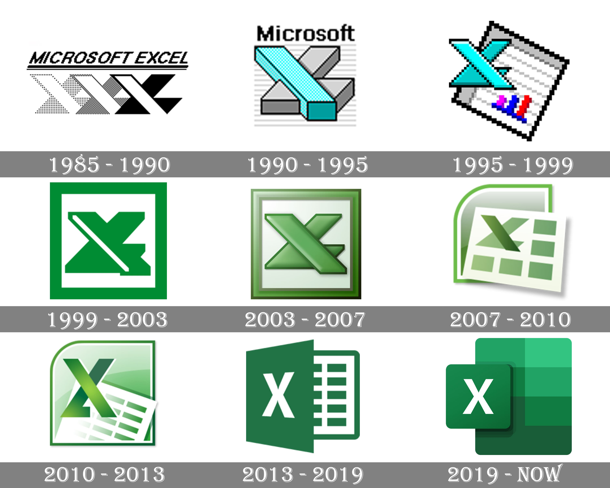
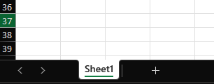
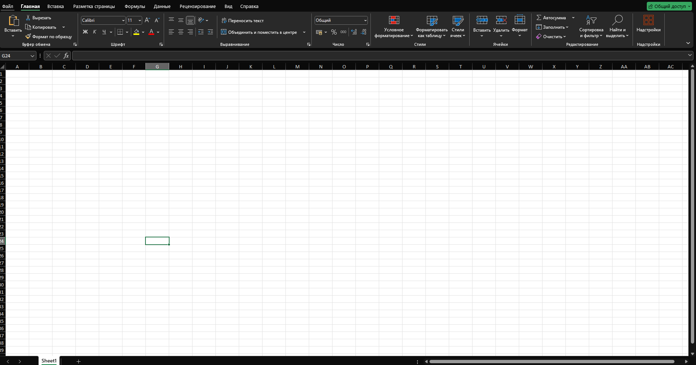
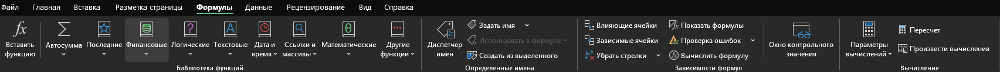
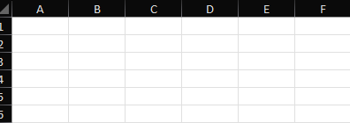
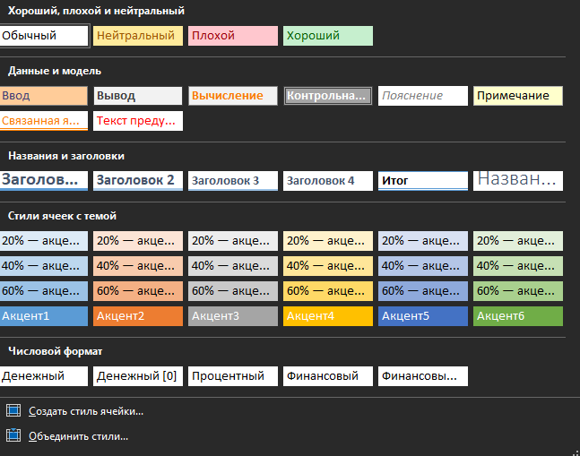
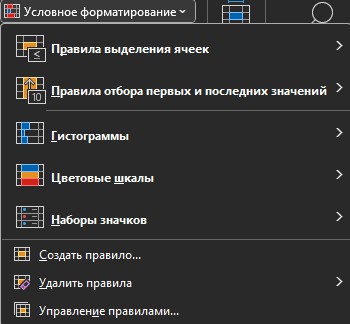
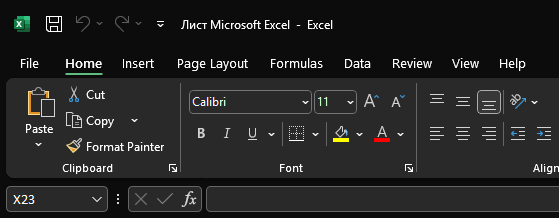
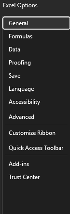

Таърихи MS Excel
MS Excel яке аз барномаҳои машҳури ҷадвалсозӣ дар ҷаҳон мебошад, ки онро ширкати Microsoft таҳия кардааст.
Оғози роҳ (1985)
Excel бори аввал соли 1985 барои компютерҳои Apple Macintosh нашр шуд. Он замон Microsoft бо Lotus 1-2-3 рақобат мекард.
Excel барои Windows (1987)
Соли 1987 Excel барои Windows бароварда шуд. Барнома бо интерфейси графикии худ фарқ мекард.
Excel дар солҳои 1990-ум
- Excel 3.0 (1990) – Ҷорӣ кардани гистограммаҳо ва диаграммаҳо.
- Excel 5.0 (1993) – Илова шудани макросҳо (VBA – Visual Basic for Applications).
Excel дар асри 21
Солҳои 2000-ум Excel боз ҳам қавитар шуд. Версияҳои нав бо формулаҳои мураккаб ва ҷадвалҳои динамикӣ таъмин гардиданд.
Соли 2007 формати нави файлҳо – .xlsx ҷорӣ шуд.
Хулоса
Имрӯз MS Excel дар тамоми ҷаҳон истифода мешавад – аз ҳисобдорӣ то таҳқиқоти илмӣ. 🚀
Ба пеш ⏩Омодагӣ ба дарсҳо
Омодагӣ ба дарсҳо яке аз қадамҳои муҳими муваффақият дар таҳсил мебошад. Агар шумо пеш аз дарс омодагӣ гиред, фаҳмиши мавзӯъ осонтар ва дарккунии маълумот самараноктар мешавад.
Қадамҳои асосии омодагӣ ба дарс:
- ✅ Муҳити хонишро тайёр кунед – Дар ҷойи ором ва равшан нишинед, то ки ҳангоми омӯзиш ягон чиз шуморо парешон накунад.
- ✅ Лавозимоти дарсӣ омода созед – Дастрас доштани дафтар, қалам, китобҳо ва компютер муҳим аст, то ки вақти худро беҳуда сарф накунед.
- ✅ Барои хониш нақша тартиб диҳед – Муайян кунед, ки кадом мавзӯъҳоро бояд хонед ва чӣ қадар вақт ба онҳо ҷудо мекунед.
- ✅ Фаҳмидани мавзуъро тақвият диҳед – Ҳангоми мутолиа кӯшиш кунед, ки мавзӯъро нафақат азёд кунед, балки амиқ дарк намоед.
- ✅ Такрор ва машқ кунед – Барои беҳтар ёд гирифтани маълумот, аз саволҳо ва вазифаҳои амалӣ истифода баред.
- ✅ Танаффусҳои кӯтоҳ бигиред – Барои нигоҳ доштани диққат, пас аз ҳар 40-50 дақиқа хониш 5-10 дақиқа истироҳат кунед.
Хулоса
Агар шумо ба дарсҳо бодиққат ва бо нақша омодагӣ гиред, фаҳмидани мавзуъҳо барои шумо осон хоҳад шуд ва сатҳи дониши шумо беҳтар мегардад. Омодагии хуб – калиди муваффақият дар таҳсил аст! 📚🚀
Насб кардани MS Excel дар Windows
MS Excel яке аз барномаҳои муҳими кор бо ҷадвалҳо ва таҳлили маълумот мебошад. Барои насб кардани он дар Windows, шумо метавонед аз роҳҳои гуногун истифода баред.
Қадами 1: Омодагӣ ба насб
- ✅ Пайвасти интернетро санҷед – Барои зеркашӣ ва насби MS Excel, ба интернети устувор ниёз доред.
- ✅ Ҳисоби Microsoft дошта бошед – Барои фаъол кардани Excel, ба шумо ҳисоби Microsoft лозим мешавад.
Қадами 2: Насб кардан тавассути Microsoft 365 (Office 365)
- 1️⃣ Ба вебсайти расмии Microsoft ворид шавед: www.office.com
- 2️⃣ Бо ҳисоби Microsoft-и худ ворид шавед.
- 3️⃣ Ба бахши "Install Office" равед ва Microsoft 365-ро интихоб кунед.
- 4️⃣ Файли насбкунандаро зеркашӣ кунед ва онро иҷро кунед.
- 5️⃣ Пас аз насб, ба ҳисоби худ ворид шавед ва Excel-ро фаъол созед.

Қадами 3: Насб кардани MS Excel аз Microsoft Store
- 1️⃣ Microsoft Store-ро дар Windows кушоед.
- 2️⃣ "MS Excel" -ро ҷустуҷӯ кунед.
- 3️⃣ Барномаро зеркашӣ ва насб кунед.
Қадами 4: Насб кардани версияи офлайн (Microsoft Office 2016, 2019, 2021)
- 1️⃣ Файли насбкунии Microsoft Office-ро дастрас кунед.
- 2️⃣ Насбкуниро оғоз кунед ва қадамҳоро пайгирӣ намоед.
- 3️⃣ Пас аз насб, MS Excel-ро кушоед ва онро бо калиди маҳсулот (Product Key) фаъол созед.
Хулоса
Шумо метавонед MS Excel-ро тавассути Microsoft 365, Microsoft Store ё насбкунандаи офлайн насб кунед. Пас аз насб, Excel барои таҳлили маълумот, ҳисобҳо ва сохтани ҷадвалҳои касбӣ омода хоҳад шуд! 🚀
Қисмҳои асосии MS Excel
- 1️⃣ Варақа (Worksheet) – Як саҳифаи ҷадвалбандӣ дар дохили файл (Workbook), ки аз сатрҳо ва сутунҳо иборат аст. 
- 2️⃣ Китоби корӣ (Workbook) – Файли асосии Excel, ки метавонад як ё якчанд варақа дошта бошад. Формати асосии он .xlsx мебошад. 
- 3️⃣ Ячейка (Cell) – Воҳиди асосии ҷадвал, ки дар буриши сатру сутун ҷойгир мебошад (масалан: A1, B2).
- 4️⃣ Панели асбобҳо (Ribbon) – Интерфейси идоракунӣ, ки бахшҳои Home, Insert, Formulas ва Data-ро дар бар мегирад.
- 5️⃣ Сатри формулаҳо (Formula Bar) – Барои ворид ва таҳрири формулаҳо ва маълумотҳо истифода мешавад. 
- 6️⃣ Сатру сутунҳо (Rows & Columns) – Сутунҳо бо ҳарфҳо (A, B, C...) ва сатрҳо бо рақамҳо (1, 2, 3...) ишора мешаванд. 
- 7️⃣ Формулаҳо ва функсияҳо (Formulas & Functions) – SUM(), AVERAGE(), IF() ва дигар функсияҳои мураккаб барои ҳисобҳо.
- 8️⃣ Диаграммаҳо (Charts) – Гистограммаҳо, диаграммаҳои хаттӣ ва доирашакл барои таҳлили маълумот.
Хулоса
Шумо метавонед MS Excel-ро тавассути Microsoft 365, Microsoft Store ё насбкунандаи офлайн насб кунед. Пас аз насб, Excel барои таҳлили маълумот, ҳисобҳо ва сохтани ҷадвалҳои касбӣ омода хоҳад шуд! 🚀
Форматбандӣ дар MS Excel
Форматбандӣ (Formatting) дар MS Excel яке аз хусусиятҳои муҳимест, ки ба корбарон имкон медиҳад, намуди маълумотро танзим ва беҳтар намоянд. Бо истифода аз форматбандӣ, шумо метавонед ҷадвалҳоро зебо, хонданашаванда ва касбӣ гардонед.
1. Форматбандии матн ва рақамҳо
- 🔹 Тағйири шрифт (Font Formatting) – Ранги матн, андоза, ғафсӣ (Bold), курсив (Italic) ва хаткашӣ (Underline)-ро танзим мекунад.
- 🔹 Навъи рақам (Number Format) – Excel имкон медиҳад, ки рақамҳо бо форматҳои гуногун нишон дода шаванд:
- ✅ General – Формати оддӣ бе ягон тағйирот.
- ✅ Number – Рақам бо даҳӣ ва ҷудокунандаи ҳазорҳо.
- ✅ Currency – Асъор бо аломати пулӣ.
- ✅ Percentage – Фоизӣ (масалан, 50% ба ҷои 0.5).
- ✅ Date & Time – Намуди сана ва вақт.

2. Форматбандии Ячейкаҳо (Cell Formatting)
- 🔹 Ранги замина (Fill Color) – Барои ранга кардани Ячейкаҳо истифода мешавад.
- 🔹 Ҳудудҳо (Borders) – Илова кардани хатҳои атрофи Ячейкаҳо барои ҷудо кардани маълумот.
- 🔹 Мутобиқсозии матн (Alignment) – Ҷойгиркунии матн дар дохили Ячейка (чап, рост, миёна).
3. Форматбандии шартӣ (Conditional Formatting)
- 🔹 Ин функсия имкон медиҳад, ки Ячейкаҳо вобаста ба арзишҳояшон ранги худкор гиранд.
- 🔹 Намунаҳо:
- ✅ Агар рақам аз 100 калон бошад, ранги сабз пайдо шавад.
- ✅ Агар арзиш манфӣ бошад, бо ранги сурх нишон дода шавад.
- ✅ Агар сана гузашт (масалан, мӯҳлат тамом шуд), ранги Ячейка зард шавад.
- 📌 Барои истифода бурдан:
- 1️⃣ Ба Home → Conditional Formatting равед.
- 2️⃣ Қоидаи нав созед (New Rule).
- 3️⃣ Шарт ва рангро интихоб кунед.
4. Форматбандии ҷадвалҳо (Table Formatting)
- 🔹 Excel имкон медиҳад, ки ҷадвалро бо услубҳои омодашуда (Table Styles) зебо кунед.
- 🔹 Барои истифода:
- 1️⃣ Маълумотро интихоб кунед.
- 2️⃣ Ба Home → Format as Table равед.
- 3️⃣ Намуди ҷадвали дилхоҳро интихоб кунед.
5. Копия кардани формат (Format Painter)
- 🔹 Агар шумо як Ячейкаро форматбандӣ карда бошед ва мехоҳед, ки ҳамон форматро ба дигар Ячейкаҳо татбиқ кунед, тугмаи Format Painter истифода мешавад.
- 📌 Барои истифода бурдан:
- 1️⃣ Ячейкаи форматбандишударо интихоб кунед.
- 2️⃣ Ба Home → Format Painter пахш кунед.
- 3️⃣ Ячейка ё минтақаи дигарро интихоб кунед.
Хулоса
Форматбандӣ дар MS Excel на танҳо ҷадвалҳоро зебо мекунад, балки хонданашаванда ва фаҳмо мегардонад. Бо истифодаи форматбандии шартӣ, шумо метавонед маълумоти муҳимро равшан нишон диҳед ва таҳлилро осон гардонед! 🚀
Ворид кардани файлҳои матнӣ дар MS Excel
MS Excel ба корбарон имкон медиҳад, ки файлҳои матнӣ (Text Files) -ро ворид карда, маълумотро коркард ва таҳлил намоянд. Файлҳои матнӣ одатан дар форматҳои .txt ва .csv ҳастанд, ки маълумотро бо фосила ё вергул ҷудо мекунанд.
1. Усулҳои ворид кардани файлҳои матнӣ
- ✅ Истифодаи Open (кушодани файл).
- ✅ Истифодаи Import (Data Get & Transform).
- ✅ Кашолакунӣ ва партофтан (Drag & Drop).
2. Ворид кардани файл тавассути менюи Open
- 📌 Ин усул барои кушодани файлҳои матнӣ ҳамчун ҷадвали нав истифода мешавад.
- 1️⃣ Excel-ро кушоед.
- 2️⃣ Ба File → Open → Browse равед.
- 3️⃣ Намуди файлро ба Text Files (.txt, .csv) иваз кунед.
- 4️⃣ Файли матниро интихоб кунед ва Open -ро пахш кунед.
- 5️⃣ Равзанаи Text Import Wizard пайдо мешавад:
- ✅ Агар маълумот бо вергул ё фосила ҷудо шуда бошад, Delimited -ро интихоб кунед.
- ✅ Агар маълумот ба таври мураттаб дар сутунҳо бошад, Fixed Width -ро интихоб кунед.
- 6️⃣ Форматро тасдиқ кунед ва Finish -ро пахш намоед.
3. Ворид кардани файл тавассути менюи Import
- 📌 Ин усул барои ворид кардани маълумот ба варақи мавҷуда истифода мешавад.
- 1️⃣ Ба Data → Get Data → From Text/CSV равед.
- 2️⃣ Файли матниро интихоб кунед.
- 3️⃣ Excel маълумотро нишон медиҳад – Load-ро пахш кунед.
4. Кашолакунӣ ва партофтани файл (Drag & Drop)
- 📌 Агар файли матнӣ дорои маълумоти содда бошад, шумо метавонед онро мустақиман ба Excel партофта, бо Text to Columns коркард кунед.
5. Форматбандии маълумоти воридшуда
- 📌 Пас аз ворид кардани файл, шумо метавонед:
- 🔹 Сутунҳоро ҷудо кунед – бо истифода аз Text to Columns.
- 🔹 Рақам ва санаҳоро форматбандӣ кунед – аз Number Format.
- 🔹 Филтр ва ҷустуҷӯ кунед – бо Sort & Filter.
Хулоса
Ворид кардани файлҳои матнӣ ба Excel ба шумо имкон медиҳад, ки маълумотро зуд таҳлил ва коркард кунед. Агар файлҳо дуруст ворид шаванд, кор бо ҷадвалҳо ва ҳисобҳо осонтар хоҳад шуд! 🚀
Формулаҳои арифметикӣ дар MS Excel
Формулаҳои арифметикӣ дар MS Excel барои иҷрои ҳисобҳои математикӣ истифода мешаванд. Бо ёрии онҳо, шумо метавонед ҷамъ, тарҳ, зарб, тақсим ва дигар амалҳои ҳисобиро анҷом диҳед.
1. Чӣ тавр формула нависем?
- 📌 Ҳар як формула дар MS Excel бо аломати "=" (баробар) оғоз мешавад.
- 📌 Формулаҳоро бо рақамҳо ё Ячейкаҳо навиштан мумкин аст.
2. Амалҳои асосии арифметикӣ
| Амал | Аломат | Намуна | Натиҷа |
|---|---|---|---|
| Ҷамъ | + | =5+3 | 8 |
| Тарҳ | - | =10-4 | 6 |
| Зарб | * | =6*2 | 12 |
| Тақсим | / | =20/4 | 5 |
| Дараҷа | ^ | =3^2 | 9 |
✅ Агар рақамҳо дар Ячейкаҳо бошанд:
Агар A1=10 ва B1=5, пас =A1+B1 натиҷаи 15 медиҳад.
3. Формулаҳои муҳим бо Ячейкаҳо
- 🔹 SUM – ҷамъ кардани як қатор Ячейкаҳо: =SUM(A1:A5)
- 🔹 AVERAGE – ҳисоб кардани миёнаи арифметикӣ: =AVERAGE(A1:A5)
- 🔹 MIN ва MAX – ёфтани хурдтарин ва калонтарин рақам: =MIN(A1:A5), =MAX(A1:A5)
- 🔹 ABS – ёфтани миқдори мутлақ: =ABS(-10) → натиҷа 10
- 🔹 MOD – боқимонда аз тақсим: =MOD(10, 3) → натиҷа 1
4. Афзалияти амалиётҳо (Тартиби иҷрои амалҳо)
- Excel формулаҳоро тибқи тартиби математикӣ иҷро мекунад:
- 1️⃣ Қавсҳо ()
- 2️⃣ Дараҷа ^
- 3️⃣ Зарб ва тақсим * /
- 4️⃣ Ҷамъ ва тарҳ + -
📌 Намуна:
=10+5*2 → натича 20 (Аввал 5×2=10, баъд 10+10=20).
=(10+5)*2 → натича 30 (Аввал 10+5=15, баъд 15×2=30).
Хулоса
Формулаҳои арифметикӣ дар MS Excel ҳисобҳоро осон ва тез мекунанд. Бе онҳо, коркарди маълумоти рақамӣ душвор хоҳад буд. Барои самаранок кор кардан, истифодаи формулаҳо ва функсияҳои асосиро омӯзед! 🚀
Истифодаи функсияҳо дар MS Excel
Функсияҳо дар MS Excel ба корбарон кӯмак мекунанд, ки ҳисобҳоро зуд ва бе хатогӣ анҷом диҳанд. Онҳо формулаҳои тайёр мебошанд, ки маълумотро ҳисоб ва таҳлил мекунанд.
1. Чӣ тавр функсияҳоро истифода барем?
- 📌 Ҳамаи функсияҳо бо аломати "=" (баробар) оғоз мешаванд.
- 📌 Пас аз он номи функсия ва параметрҳои он дар қавсҳо навишта мешаванд.
- 🔹 Намуна: =SUM(A1:A5) → Ҳисоб кардани ҷамъбасти Ячейкаҳои A1 то A5.
2. Функсияҳои оддӣ ва маъмул
- 1. SUM – Ҷамъбасти рақамҳо
- 📌 Ҷамъ кардани як қатор Ячейкаҳо. =SUM(A1:A5) → Ҳисоб кардани ҷамъбасти A1+A2+A3+A4+A5.
- 2. AVERAGE – Миёнаи арифметикӣ
- 📌 Ҳисоб кардани миёнаи арзишҳо. =AVERAGE(A1:A5) → Ҳисоб кардани (A1+A2+A3+A4+A5)/5.
- 3. MIN ва MAX – Камтарин ва калонтарин рақам
- 📌 MIN – Хурдтарин арзишро меёбад.
- 📌 MAX – Калонтарин арзишро меёбад.
- Намуна: =MIN(A1:A5) → Нишон додани хурдтарин рақам дар ин қатор.
- Намуна: =MAX(A1:A5) → Нишон додани калонтарин рақам дар ин қатор.
- 4. COUNT – Шумориши Ячейкаҳои дорои рақам
- 📌 Ин функсия шумораи Ячейкаҳои дорои рақамҳоро ҳисоб мекунад. =COUNT(A1:A10) → Ҳисоб кардани шумораи Ячейкаҳое, ки рақам доранд.
- 5. COUNTA – Шумориши ҳамаи Ячейкаҳо (бо матн ва рақам)
- 📌 Агар Ячейкаҳо ҳам рақам ва ҳам матн дошта бошанд, COUNTA онҳоро мешуморад. =COUNTA(A1:A10) → Ҳисоб кардани ҳамаи Ячейкаҳои холӣ набуда.
- 6. IF – Функсияи мантиқӣ
- 📌 Ин функсия шарти муайянро месанҷад ва вобаста ба он натиҷаи гуногун медиҳад.
- Намуна: =IF(A1>10, "Бале", "Не")
- ✔ Агар A1 > 10, натиҷа "Бале" мешавад.
- ✔ Агар A1 ≤ 10, натиҷа "Не" мешавад.
3. Чӣ тавр функсияҳоро зуд истифода барем?
- 🔹 Ба Formula Bar "=", номи функсия ва қавсҳоро ворид кунед.
- 🔹 Ба Formulas → Insert Function равед ва функсияи лозимаро интихоб кунед.
- 🔹 Барои функсияҳо қаторҳоро интихоб карда, Enter -ро пахш кунед.
Хулоса
Функсияҳои Excel ҳисобҳоро осон ва дақиқ мекунанд. Функсияҳои SUM, AVERAGE, MIN, MAX, COUNT, IF барои ҳар як корбар хеле муҳиманд. Бо ёд гирифтани онҳо, шумо метавонед маълумотро тезтар ва муассиртар таҳлил кунед! 🚀
Функсияҳои рақамӣ дар MS Excel
Функсияҳои рақамӣ дар MS Excel барои иҷрои ҳисобҳои гуногуни математикӣ истифода мешаванд. Ин функсияҳо ба корбарон кӯмак мекунанд, ки рақамҳоро коркард кунанд, аз ҷумла: ҷамъ, тарҳ, тақсим, зарб, тақсим бо бақия, ёфтани қиматҳои ҳадди ақал ва ҳадди аксар ва ғайра.
1. Функсияҳои асосии рақамӣ
| Функсия | Тавсиф | Намуна ва натиҷа |
|---|---|---|
| SUM | Ҷамъ кардани як қатор Ячейкаҳо | =SUM(A1:A5) → Натиҷа: A1+A2+A3+A4+A5 |
| PRODUCT | Зарби рақамҳо | =PRODUCT(A1:A3) → Натиҷа: A1 × A2 × A3 |
| ABS | Қимати мутлақ (беманфӣ) | =ABS(-10) → Натиҷа: 10 |
| SQRT | Истиқрори решаи квадратӣ | =SQRT(25) → Натиҷа: 5 |
| POWER | Дараҷа бардоштани рақам | =POWER(3, 2) → Натиҷа: 3² = 9 |
| ROUND | Рақамро то шумораи муайяншудаи даҳӣ гирд мекунад | =ROUND(5.678, 2) → Натиҷа: 5.68 |
| ROUNDDOWN | Гирдкунии рақам ба поён | =ROUNDDOWN(5.678, 2) → Натиҷа: 5.67 |
| ROUNDUP | Гирдкунии рақам ба боло | =ROUNDUP(5.678, 2) → Натиҷа: 5.68 |
| INT | Қисми бутуни рақамро бармегардонад | =INT(7.9) → Натиҷа: 7 |
| MOD | Боқимонда аз тақсим | =MOD(10, 3) → Натиҷа: 1 |
| RAND | Генератсияи рақами тасодуфӣ аз 0 то 1 | =RAND() → Натиҷа: 0.2356 (тасодуфӣ) |
| RANDBETWEEN | Генератсияи рақами тасодуфӣ дар байни ду рақами муайян | =RANDBETWEEN(1, 100) → Натиҷа: 47 (тасодуфӣ) |
2. Чӣ тавр функсияҳои рақамиро истифода барем?
- 📌 Ҳамаи функсияҳо бо аломати "=" (баробар) оғоз мешаванд.
- 📌 Пас аз он номи функсия ва параметрҳои он дар қавсҳо навишта мешаванд.
- Мисол: =SUM(A1:A10) → Ҳисоб кардани ҷамъбасти рақамҳо дар қатор.
- Мисол: =SQRT(A1) → Баровардани решаи квадратии рақами дар A1 буда.
- Мисол: =MOD(A2, 4) → Боқимондаро аз тақсим нишон медиҳад.
3. Фарқият байни ROUND, ROUNDDOWN ва ROUNDUP
- 🔹 ROUND(x, n) → Гирдкунии муқаррарӣ (агар 5 ё бештар бошад, боло мешавад).
- 🔹 ROUNDDOWN(x, n) → Гирдкунии рақам ба поён, новобаста ба рақами даҳӣ.
- 🔹 ROUNDUP(x, n) → Гирдкунии рақам ба боло, новобаста ба рақами даҳӣ.
4. Чӣ тавр рақамҳои тасодуфиро эҷод кунем?
- 🔹 Барои гирифтани рақами тасодуфӣ аз 0 то 1 → =RAND()
- 🔹 Барои гирифтани рақами тасодуфӣ аз 1 то 100 → =RANDBETWEEN(1, 100)
- 📌 Ин функсияҳо ҳар дафъае, ки варақ навсозӣ мешавад, рақами нав эҷод мекунанд.
Хулоса
Функсияҳои рақамӣ дар MS Excel барои иҷрои ҳисобҳои математикӣ истифода мешаванд. Онҳо коркарди рақамҳоро осон ва самаранок мегардонанд. Бо ёд гирифтани функсияҳои SUM, ROUND, ABS, MOD, POWER, SQRT, шумо метавонед зуд ва дақиқ ҳисобҳои математикӣ анҷом диҳед! 🚀
Формулаҳои мантиқӣ дар MS Excel
Формулаҳои мантиқӣ дар MS Excel барои анҷом додани амалҳои мантиқӣ (чи хулосаи "дуруст" ё "нодуруст") истифода мешаванд. Ин формулаҳо ба корбарон имкон медиҳанд, ки маълумоти воридшударо бар асоси шартҳои муайян таҳлил кунанд ва натиҷаҳоро тибқи он хулоса кунанд. Формулаҳои мантиқӣ ба корбарон кӯмак мекунанд, ки дар ҳолатҳои гуногуни амалҳои қарор қабулкуниро иҷро кунанд.
1. Формулаҳои мантиқӣ ва функсияҳо
- ✅ IF – Мантиқӣ шартӣ
- ✅ AND – Агар ҳамаи шартҳо дуруст бошанд
- ✅ OR – Агар яке аз шартҳо дуруст бошад
- ✅ NOT – Инверт кардани натиҷаи мантиқӣ
- ✅ IFERROR – Ҳалли хатогиҳо
📌 Функсияе, ки мувофиқи шарт муайян мекунад, ки кадом хулоса бояд баргардонида шавад (дуруст ё нодуруст).
📌 Синтаксис: =IF(шарт, хулоса_агар_дуруст, хулоса_агар_нодуруст)
Мисол: =IF(A1>10, "Бале", "Не")
🔹 Агар A1 > 10, хулоса "Бале" мешавад.
🔹 Агар A1 ≤ 10, хулоса "Не" мешавад.
📌 Функсияе, ки санҷида мекунад, ки оё ҳама шартҳо дуруст ҳастанд ё не. Агар ҳама шартҳо дуруст бошанд, натиҷа дуруст мешавад, вагарна нодуруст.
📌 Синтаксис: =AND(шарт1, шарт2, ...)
Мисол: =AND(A1>10, B1<20)< /span>
🔹 Агар A1> 10 ва B1 < 20, натиҷа дуруст мешавад.
🔹 Агар ягон шарт дуруст набошад, натиҷа нодуруст мешавад.
📌 Функсияе, ки санҷида мекунад, ки оё яке аз шартҳо дуруст аст. Агар яке аз шартҳо дуруст бошад, натиҷа дуруст мешавад, агар ҳама шартҳо нодуруст бошанд, натиҷа нодуруст мешавад.
📌 Синтаксис: =OR(шарт1, шарт2, ...)
Мисол: =OR(A1>10, B1<5)< /span>
🔹 Агар A1> 10 ё B1 < 5, натиҷа дуруст мешавад.
🔹 Агар ҳар ду шарт нодуруст бошанд, натиҷа нодуруст мешавад.
📌 Функсияе, ки натиҷаи мантиқии дуруст ё нодурустро баръакс мекунад.
📌 Синтаксис: =NOT(шарт)
Мисол: =NOT(A1>10)
🔹 Агар A1 > 10, натиҷа нодуруст мешавад (чунки A1 > 10 дуруст аст ва функсия онро баръакс
мекунад).
🔹 Агар A1 ≤ 10, натиҷа дуруст мешавад.
📌 Ин функсия барои нишон додани натиҷаҳои хато (например, қатъ кардани функсия ё шарт) истифода мешавад. Агар функсия хатое дошта бошад, IFERROR натиҷаи пешфарзро нишон медиҳад.
📌 Синтаксис: =IFERROR(функсия, хулоса_агар_хато)
Мисол: =IFERROR(A1/B1, "Натичаи хато")
🔹 Агар A1/B1 хато (масалан, тақсим кардани ба сифр) бошад, натиҷа "Натичаи хато" мешавад.
🔹 Агар хатое набошад, натиҷаи ҳисоб шудан меояд.
2. Мисолҳои истифодабарии формулаҳои мантиқӣ
- =IF(AND(A1>5, B1<10), "Пасандоз" , "Нопасандоз" )
📌 Агар A1> 5 ва B1 < 10, натиҷа "Пасандоз" мешавад, вагарна "Нопасандоз" . - =IF(OR(A1="Маъруфи", B1="Афсари"), "Маъруфи ё Афсари" ,
"Дигар")
📌 Агар ё A1 "Маъруфи" бошад ё B1 "Афсари", натиҷа "Маъруфи ё Афсари" мешавад, вагарна "Дигар".
3. Чӣ тавр формулаҳои мантиқиро истифода барем?
- 📌 Формулаҳои мантиқӣ бо аломати "=" оғоз мешаванд.
- 📌 Баъд, номи функсия (мисол, IF, AND, OR) ва параметрҳои он дар қавсҳо ворид мешаванд.
- 📌 Формулаҳоро барои таҳлили маълумот ва гирифтани хулосаҳои дуруст ё нодуруст истифода баред.
Хулоса
Формулаҳои мантиқӣ дар MS Excel барои амалиёти шартӣ ва қарор қабулкунии ба назар расида дар таҳлили маълумотҳо хеле муҳим мебошанд. Функсияҳои IF, AND, OR, NOT, IFERROR ба корбарон имкон медиҳанд, ки муҳити динамикӣ ва мантиқиро дар коркарди маълумотҳо эҷод кунанд. 🚀
Намунае аз лоиҳакашии ҳисобҳо дар MS Excel
Лоиҳакашии ҳисобҳо дар MS Excel барои таҳлили маълумотҳо ва иҷрои ҳисобҳо дар як варақи корӣ муҳим аст. Варақҳои кории Excel имкон медиҳанд, ки ҳисобҳо бо истифодаи функсияҳо ва формулаҳои мураккаб автоматизатсия карда шаванд, ки ба корбарон кӯмак мекунад, ки маълумотҳоро ба таври муассир таҳлил кунанд. Лоиҳакашии дуруст ва тартиби ҳисобҳо дар варақи корӣ на танҳо кори ҳисобиро осон мекунад, балки натиҷаҳоро дақиқ ва зуд ба даст меорад.
1. Гузориш ва муқаррар кардани вазифаҳои асосии ҳисобҳо
Дар лоиҳакашии ҳисобҳо, мо бояд пеш аз ҳама вазифаҳои асосиро муайян кунем. Масалан, агар мо қарор дорем, ҳисобкунии фоида ё зарарро таҳлил кунем, пас вазифаҳои асосӣ метавонанд ҷамъи фурӯш, хароҷот, фоида, ва муҳосибаро дар бар гиранд.
Намунаи ҳисоб дар MS Excel:
Мо лоиҳаи фурӯши маҳсулотро дар MS Excel таҳия мекунем.
| № | Маҳсулот | Миқдор (одд.) | Нархи як воҳид (USD) | Ҳамагӣ (USD) |
|---|---|---|---|---|
| 1 | Маҳсулоти A | 10 | 20 | 200 |
| 2 | Маҳсулоти B | 15 | 30 | 450 |
| 3 | Маҳсулоти C | 7 | 50 | 350 |
Ҳисоб кардани Ҳамагӣ:
Ҳамагӣ барои ҳар як маҳсулотро бо функсияи =B2*C2 (миқдор × нархи як воҳид) ҳисоб мекунем. Мо инро барои ҳар як қатор татбиқ мекунем:
- =B2*C2 барои Маҳсулоти A
- =B3*C3 барои Маҳсулоти B
- =B4*C4 барои Маҳсулоти C
2. Хулоса ва ё гузориши умумӣ
Ҳамагӣ барои ҳамаи маҳсулотро метавонем бо функсияи =SUM(D2:D4) ҳисоб кунем. Ин функсия ҷамъбасти маълумотро ба таври автоматикӣ анҷом медиҳад.
| № | Маҳсулот | Миқдор (одд.) | Нархи як воҳид (USD) | Ҳамагӣ (USD) |
|---|---|---|---|---|
| 1 | Маҳсулоти A | 10 | 20 | 200 |
| 2 | Маҳсулоти B | 15 | 30 | 450 |
| 3 | Маҳсулоти C | 7 | 50 | 350 |
| Ҷамъ | 1000 | |||
3. Ҳисоб кардани фоида (нархи фурӯш ва хароҷот)
Барои ҳисоб кардани фоида, мо бояд фарқияти байни ҳамагӣ (фурӯш) ва хароҷотро ҳисоб кунем. Ба ин мақсад, мо сохтори ҳисобро бо функсияҳои мантиқӣ ва арифметикӣ тартиб медиҳем.
Мисол: Ҳисоб кардани фоида:
Фоида = Ҳамагӣ (фурӯш) - Хароҷот
Намудҳои додашударо бо формулаи =D5 - E5 иҷро мекунем, ки дар он D5 — ҷамъбасти фурӯш ва E5 — хароҷот.
4. Тағйирот ва муҳосибаи фаъолияти ҳармоҳа
Агар мо қарор дорем, ки ҳисобҳои фурӯшро барои як муддати муайян ба таври автоматикӣ иҷро кунем (масалан, ҳар моҳ), мо метавонем функсияҳои DATE, MONTH ва YEAR -ро истифода кунем барои муайян кардани вақти ҳисобот.
Мисол: =TEXT(A1, "mmmm yyyy") – Барои нишон додани моҳ ва соли фурӯш дар формати "мммм yyyy".
5. Лоиҳакашии ҳисобҳо бо диаграммаҳо
Барои бехтар фаҳмидани маълумотҳо, мо метавонем диаграммаҳо ва графикҳоро истифода барем. Excel имкон медиҳад, ки маълумоти шуморо ба диаграммаҳои гуногун табдил диҳед, ки нишондиҳандаҳо ва раванди таҳлилро осонтар кунанд.
🔹 Диаграммаи бар ва диаграммаи хат барои нишон додани мағозаи фурӯш ё фоида дар вақти муайян беҳтарин аст.
Хулоса
Лоиҳакашии ҳисобҳо дар MS Excel ба шумо имкон медиҳад, ки маълумотро барои таҳлил ва ҳисобкунии фоида, зарар, ё дигар нишондиҳандаҳои молиявӣ дар як ҷадвал истифода баред. Бо истифодаи функсияҳои арифметикӣ, мантиқӣ ва диаграммаҳо, таҳлили маълумотҳо дақиқ ва осон мегардад. Excel инчунин бо вазифаҳои автоматикӣ кӯмак мекунад, ки ҳисобҳоро дар муҳитҳои мураккаб ба таври самаранок анҷом диҳед.
Асбоби сохтани диаграммаҳо дар MS Excel
Диаграммаҳо яке аз василаҳои муҳими визуализатсияи маълумот дар MS Excel мебошанд. Бо ёрии диаграммаҳо, маълумоти рақамӣ ба шакли графикӣ табдил дода мешавад, ки фаҳмидани тамоюлҳо ва муқоисаи нишондиҳандаҳоро осон мекунад.
Excel имконият медиҳад, ки диаграммаҳои гуногунро эҷод ва таҳрир намоем, ки ба эҳтиёҷоти таҳлилгарон ва мутахассисони молиявӣ мутобиқ карда шудаанд.
1. Чӣ тавр диаграмма эҷод кардан мумкин аст?
Барои сохтани диаграмма дар MS Excel, шумо метавонед қадамҳои зеринро иҷро кунед:
- ✅ Қадам 1: Маълумотро интихоб кунед — Ҷадвал ё сутунҳоеро интихоб кунед, ки мехоҳед онҳоро ба диаграмма табдил диҳед.
- Мисол:
Моҳ | Фурӯш (USD)
Январ - 2000
Феврал - 2500
Март - 3000 - ✅ Қадам 2: Гузариш ба ҷадвали "Insert" — Ба менюи Insert (Гузоштан) равед.
- ✅ Қадам 3: Намуди диаграммаро интихоб кунед — Диаграммаи дилхоҳро интихоб кунед (масалан, сутунӣ, хатӣ, доираӣ).
- ✅ Қадам 4: Танзим ва ислоҳ кардани диаграмма — Пас аз эҷод, метавонед унвон, тамғакоғазҳо ва рангҳоро танзим намоед.
2. Намудҳои асосии диаграммаҳо
Excel намудҳои гуногуни диаграммаҳоро пешниҳод мекунад. Инҳо маъмултарин ҳастанд:
- 1️⃣ Диаграммаи сутунӣ (Column Chart) — 📌 Барои муқоисаи
нишондиҳандаҳо байни гурӯҳҳои маълумотӣ истифода мешавад.
Истифода: Муқоисаи фурӯши маҳсулот, Нишон додани афзоиши фоида. - 2️⃣ Диаграммаи хатӣ (Line Chart) — 📌 Барои намоиш додани
тағйирот дар тӯли вақт.
Истифода: Афзоиши даромад ҳар моҳ, Тағйироти ҳарорат дар як сол. - 3️⃣ Диаграммаи доираӣ (Pie Chart) — 📌 Барои нишон додани ҳиссаи
ҳар як қисм дар маҷмӯъ истифода мешавад.
Истифода: Тақсимоти фурӯш миёни маҳсулотҳо, Таҳлили хароҷот дар буҷа. - 4️⃣ Диаграммаи сутунҳои ҷамъбастӣ (Stacked Column Chart) — 📌
Барои нишон додани ҳиссаи ҳар як категория дар натиҷаи умумӣ.
Истифода: Муқоисаи фоида ва хароҷот. - 5️⃣ Диаграммаи пароканда (Scatter Plot) — 📌 Барои таҳлили
вобастагии байни ду маҷмӯи маълумотҳо.
Истифода: Робитаи байни нархи маҳсулот ва фурӯш.
3. Иловакунии Қисмҳои диаграмма
Барои такмил додани диаграмма, шумо метавонед Қисмҳои зеринро илова кунед:
- ✅ Унвони диаграмма — Ба диаграмма ном гузоред.
- ✅ Легенда (Шарҳҳо) — Нишон медиҳад, ки кадом ранг ба кадом маълумот тааллуқ дорад.
- ✅ Меъёрҳои меҳварҳо (Axis Labels) — Барои муайян кардани арзишҳои меҳвари X ва Y.
- ✅ Маълумотҳои рақамӣ (Data Labels) — Арзишҳоро дар нуқтаҳои диаграмма нишон медиҳад.
4. Чӣ тавр диаграммаи динамикӣ эҷод кардан мумкин аст?
Агар маълумоти шумо тағйир ёбад, диаграммаи шумо бояд ба таври худкор навсозӣ шавад. Барои ин, диаграммаи худро бо ҷадвали динамикӣ (Pivot Table) пайваст кардан мумкин аст.
- 1️⃣ Ҷадвали худро ҳамчун Table (Ҷадвали динамикӣ) формат кунед.
- 2️⃣ Диаграммаро дар асоси ин ҷадвал созед.
- 3️⃣ Ҳангоми ворид кардани маълумоти нав, диаграмма худкор навсозӣ мешавад.
5. Маслиҳатҳо барои сохтани диаграммаҳои касбӣ
- ✅ Мувофиқии диаграммаро интихоб кунед — Барои маълумоти шумо кадом диаграмма беҳтар аст, истифода баред.
- ✅ Аз ҳад зиёд унсур нагузоред — Диаграммаро тоза ва фаҳмо созед.
- ✅ Рангҳои мувофиқ интихоб кунед — Барои ҷудо кардани маълумот аз рангҳои мухталиф истифода баред.
- ✅ Диаграммаро шарҳ диҳед — Унвон ва тамғакоғазҳоро илова кунед.
Хулоса
Асбоби сохтани диаграммаҳо дар MS Excel барои таҳлили визуалии маълумотҳо имкониятҳои васеъ фароҳам меорад. Диаграммаҳо на танҳо маълумотро зебо нишон медиҳанд, балки дар қабули қарорҳои дуруст кӯмак мерасонанд. Бо истифодаи намудҳои гуногуни диаграмма ва танзимоти иловагӣ, шумо метавонед ҳисоботҳои касбӣ эҷод кунед ва таҳлили маълумоти худро осонтар намоед. 🚀
Танзими диаграмма дар MS Excel
Диаграммаҳо дар MS Excel барои визуализатсия ва таҳлили маълумот истифода мешаванд. Пас аз эҷоди диаграмма, шумо метавонед онро танзим ва мутобиқ созед, то маълумоти шумо равшан ва фаҳмо бошад.
Excel имконият медиҳад, ки унсурҳо, рангҳо, тамғакоғазҳо ва дигар ҷузъҳои диаграммаро танзим намоед.
1. Чӣ гуна диаграммаро танзим кардан мумкин аст?
Барои тағйир додан ва танзим кардани диаграмма, шумо метавонед қадамҳои зеринро иҷро кунед:
- ✅ Қадам 1: Диаграммаро интихоб кунед — Диаграммаро клик кунед, то панели танзимот фаъол шавад.
- ✅ Қадам 2: Истифодаи ҷадвали "Chart Tools" — Пас аз интихоби диаграмма, ҷадвали Chart Tools дар боло пайдо мешавад.
- ✅ Қадам 3: Диаграммаро таҳрир кунед — Шумо метавонед унсурҳо, рангҳо, хатҳо ва дигар ҷузъҳоро тағйир диҳед.
2. Қисмҳои асосии танзими диаграмма
- 1️⃣ Тағйири унвони диаграмма (Chart Title) — 📌 Барои илова ё
иваз кардани унвони диаграмма: Клик кунед ба диаграмма → Ба Chart Elements (Қисмҳои диаграмма)
равед → "Chart Title" -ро интихоб кунед ва номро ворид кунед.
Маслиҳат: Номи диаграмма бояд кӯтоҳ ва равшан бошад. - 2️⃣ Иловаи тамғаҳо (Data Labels) — 📌 Барои нишон додани арзишҳо
дар диаграмма: Ба Chart Elements равед → "Data Labels" -ро фаъол кунед.
Тамғакоғазҳоро дар дохили сутунҳо, берун ё дар боло ҷойгир кунед.
Намунаи танзим: Right Click → Add Data Labels → Format Data Labels - 3️⃣ Тағйири меҳварҳо (Axis Titles) — 📌 Барои номгузории меҳварҳо
(X ва Y): Ба Chart Elements равед → "Axis Titles" -ро фаъол кунед.
Барои меҳвари уфуқӣ (X) ва амудӣ (Y) ном гузоред.
Маслиҳат: Агар диаграмма нишондиҳандаҳои вақтро дошта бошад, меҳвари X бояд моҳ ё солро нишон диҳад. - 4️⃣ Иваз кардани ранг ва услуби диаграмма — 📌 Барои интихоби
тарҳҳои зебо: Ба Chart Tools → Design гузаред → Дар қисмати Chart Styles, ранги мувофиқро
интихоб кунед.
📌 Барои тағйири рангҳои ҷудогона: Диаграммаро клик кунед → Ба Format → Shape Fill гузаред ва ранги дилхоҳро интихоб кунед. - 5️⃣ Истифодаи легенда (Legend) — 📌 Легенда кӯмак мекунад, ки
маълумоти диаграмма шарҳ дода шавад.
Чӣ тавр фаъол кардан: Ба Chart Elements равед → "Legend" -ро фаъол кунед.
Легендаро дар поён, боло, рост ё чап ҷойгир кунед.
Маслиҳат: Агар диаграммаатон маълумоти зиёде дошта бошад, ҷойгир кардани легенда дар тарафи рост беҳтар аст.
3. Гузоштани диаграмма ба намуди динамикӣ
📌 Агар мехоҳед, ки диаграммаи шумо бо маълумоти нав худкор навсозӣ шавад:
- 1️⃣ Ҷадвали маълумотро ҳамчун Table (Ҷадвали динамикӣ) формат кунед.
- 2️⃣ Диаграммаро ба ин ҷадвал пайваст кунед.
- 3️⃣ Ҳангоми ворид кардани маълумоти нав, диаграмма худкор навсозӣ мешавад.
Қадамҳо: Маълумотро интихоб кунед → Insert → Table → OK → Ба диаграммаи худ истинод ба ҷадвали динамикӣ диҳед.
4. Филтр кардани маълумот дар диаграмма
📌 Агар мехоҳед танҳо қисме аз маълумотро дар диаграмма нишон диҳед:
- 1️⃣ Ба диаграмма клик кунед.
- 2️⃣ Ба Filter (Филтр) гузаред.
- 3️⃣ Маълумоти лозимаро интихоб кунед.
Мисол: Агар шумо фурӯши маҳсулотро барои 12 моҳ доред, вале мехоҳед танҳо 6 моҳи охирро бинед, шумо метавонед 6 моҳи аввалро филтр кунед.
5. Истифодаи диаграммаҳои 3D ва дигар намудҳо
Excel имкон медиҳад, ки диаграммаҳои 3D ва дигар намудҳоро истифода баред:
- 1️⃣ Ба диаграмма клик кунед.
- 2️⃣ Ба Chart Tools → Change Chart Type гузаред.
- 3️⃣ Намуди дилхоҳро интихоб кунед (3D Column, 3D Pie ва ғ.).
6. Маслиҳатҳои иловагӣ барои диаграммаи касбӣ
- ✅ Диаграммаро содда нигоҳ доред — Аз ҳад зиёд унсур нагузоред, то маълумот равшан бошад.
- ✅ Рангҳои мувофиқ истифода баред — Диаграмма набояд рангоранг бошад, беҳтараш 2-3 ранг интихоб кунед.
- ✅ Диаграммаҳоро мутобиқ кунед — Унвонҳо, тамғаҳо ва легендаҳоро дуруст ҷойгир кунед.
- ✅ Қарорҳои стратегӣ қабул кунед — Диаграмма бояд натиҷаҳои ҳисоботро равшан нишон диҳад.
Хулоса
Танзими диаграмма дар MS Excel ба шумо кӯмак мекунад, ки маълумоти худро беҳтар визуализатсия кунед. Бо истифодаи Қисмҳои гуногун, шумо метавонед диаграммаҳоро мутобиқ созед ва онҳоро барои таҳлилҳои касбӣ омода намоед. 🔥
Навъҳои Диаграммаҳо дар MS Excel
Диаграммаҳо яке аз воситаҳои муҳими визуализатсияи маълумот дар MS Excel мебошанд. Онҳо барои намоиш додани тамоюлҳо, муқоиса ва таҳлили маълумот истифода мешаванд. Excel намудҳои гуногуни диаграммаҳоро пешниҳод мекунад, ки ҳар кадоме барои ҳалли вазифаҳои мушаххас мувофиқ аст.
1. Диаграммаи сутунӣ (Column Chart)
📌 Барои чӣ истифода мешавад? Диаграммаи сутунӣ барои муқоисаи маълумот байни гурӯҳҳои гуногун истифода мешавад.
📌 Чӣ гуна маълумотро намоиш медиҳад? Муқоисаи фурӯши маҳсулот байни моҳҳо. Нишон додани афзоиши даромад.
📌 Намудҳои диаграммаи сутунӣ:
- Clustered Column Chart – Сутунҳои алоҳида барои ҳар як гурӯҳ.
- Stacked Column Chart – Сутунҳои ҷамъбастшуда барои муқоиса.
- 100% Stacked Column Chart – Тақсимоти нисбӣ дар сатҳи 100%.
2. Диаграммаи хатӣ (Line Chart)
📌 Барои чӣ истифода мешавад? Диаграммаи хатӣ барои нишон додани тағйирот дар тӯли вақт мувофиқ аст.
📌 Чӣ гуна маълумотро намоиш медиҳад? Рушди фурӯш дар 12 моҳ. Тағйироти ҳарорат дар як сол.
📌 Намудҳои диаграммаи хатӣ:
- Line Chart – Хати оддӣ барои нишон додани тағйирот.
- Stacked Line Chart – Хатҳои ҷамъбастшуда барои муқоисаи маълумот.
- 100% Stacked Line Chart – Тағйироти нисбӣ дар сатҳи 100%.
3. Диаграммаи доираӣ (Pie Chart)
📌 Барои чӣ истифода мешавад? Диаграммаи доираӣ барои нишон додани ҳиссаи ҳар як категория дар маҷмӯъ истифода мешавад.
📌 Чӣ гуна маълумотро намоиш медиҳад? Тақсимоти даромад аз фурӯши маҳсулот. Таҳлили буҷа ва хароҷот.
📌 Намудҳои диаграммаи доираӣ:
- Pie Chart – Доираи оддӣ бо ҳиссаҳои ҷудогона.
- Exploded Pie Chart – Ҷудо кардани қисмҳо барои равшантар нишон додан.
- 3D Pie Chart – Диаграммаи доираии сеандоза.
4. Диаграммаи сутунҳои уфуқӣ (Bar Chart)
📌 Барои чӣ истифода мешавад? Барои муқоисаи маълумоти сершумор ва нишон додани арзишҳои калонтар истифода мешавад.
📌 Чӣ гуна маълумотро намоиш медиҳад? Муқоисаи фурӯши ширкатҳои гуногун. Таҳлили самаранокии реклама.
📌 Намудҳои диаграммаи сутунҳои уфуқӣ:
- Clustered Bar Chart – Сутунҳои алоҳида барои ҳар як категория.
- Stacked Bar Chart – Сутунҳои ҷамъбастшуда барои муқоиса.
- 100% Stacked Bar Chart – Муқоисаи нисбӣ.
5. Диаграммаи пароканда (Scatter Plot)
📌 Барои чӣ истифода мешавад? Барои таҳлили вобастагии байни ду маҷмӯи маълумот истифода мешавад.
📌 Чӣ гуна маълумотро намоиш медиҳад? Алоқамандии нархи маҳсулот ва ҳаҷми фурӯш. Вобастагии хароҷот ва даромад.
📌 Намудҳои диаграммаи пароканда:
- Scatter with Markers – Нуқтаҳои алоҳида барои маълумот.
- Scatter with Lines – Нуқтаҳо бо хатҳои пайвасткунанда.
- Bubble Chart – Диаграмма бо андозаи гуногуни нуқтаҳо.
6. Диаграммаи минтақавӣ (Area Chart)
📌 Барои чӣ истифода мешавад? Барои намоиш додани тағйироти умумии маълумот дар тӯли вақт истифода мешавад.
📌 Чӣ гуна маълумотро намоиш медиҳад? Афзоиши шумораи муштариён дар 5 сол. Таҳлили хароҷот ва даромад.
📌 Намудҳои диаграммаи минтақавӣ:
- Area Chart – Минтақаи стандартӣ бо хатҳои болоӣ.
- Stacked Area Chart – Минтақаҳои ҷамъбастшуда барои муқоиса.
- 100% Stacked Area Chart – Тақсимоти нисбӣ.
7. Диаграммаи комбинатсионӣ (Combo Chart)
📌 Барои чӣ истифода мешавад? Барои муқоисаи ду намуди маълумот дар як диаграмма истифода мешавад.
📌 Чӣ гуна маълумотро намоиш медиҳад? Муқоисаи фурӯши маҳсулот бо миёнаи нархҳо. Нишон додани даромад ва хароҷот дар як график.
📌 Намудҳои диаграммаи комбинатсионӣ:
- Custom Combo Chart – Истифодаи сутун ва хати диаграмма якҷоя.
8. Диаграммаи Гистограмма (Histogram Chart)
📌 Барои чӣ истифода мешавад? Барои таҳлили тақсимоти маълумот дар гурӯҳҳои мушаххас.
📌 Чӣ гуна маълумотро намоиш медиҳад? Тақсимоти синфҳои донишҷӯён. Гурӯҳбандии маълумотҳо дар фосилаҳои муайян.
📌 Намудҳои диаграммаи гистограмма:
- Histogram Chart – Гурӯҳбандии маълумот ба сутунҳо.
9. Диаграммаи харита (Map Chart)
📌 Барои чӣ истифода мешавад? Барои нишон додани маълумоти ҷуғрофӣ дар харита.
📌 Чӣ гуна маълумотро намоиш медиҳад? Фурӯши маҳсулот дар кишварҳои гуногун. Шумораи аҳолӣ дар вилоятҳои мухталиф.
📌 Намудҳои диаграммаи харита:
- Filled Map – Харита бо ранги пуркардашуда барои минтақаҳо.
Хулоса
Навъи диаграммаи дуруст ба шумо кӯмак мекунад, ки маълумотро дақиқ ва равшан намоиш диҳед.
- 📊 Барои муқоиса → Диаграммаи сутунӣ ё уфуқӣ.
- 📈 Барои нишон додани тағйирот → Диаграммаи хатӣ ё минтақавӣ.
- 🎯 Барои ҳиссаи умумӣ → Диаграммаи доираӣ.
- 📍 Барои маълумоти ҷуғрофӣ → Диаграммаи харита.
- 🔍 Барои вобастагӣ → Диаграммаи пароканда.
Ҳангоми интихоби диаграмма, беҳтараш ба ҳадафи таҳлил диққат диҳед, то маълумот равшан ва фаҳмо бошад! 🚀
Суроғабандӣ нисбӣ дар MS Excel
Суроғабандӣ нисбӣ (Relative Addressing) яке аз усулҳои асосии истинод ба Ячейкаҳо дар Microsoft Excel мебошад. Ин намуди адресатсия ҳангоми нусхабардории формулаҳо автоматӣ тағйир ёфта, ба мавқеи нав мутобиқ мешавад.
1. Суроғабандӣ нисбӣ чист?
Суроғабандӣ нисбӣ маънои онро дорад, ки ҳангоми нусхабардории формула, истинод ба Ячейкаҳо нисбат ба мавқеи худ тағйир меёбад.
📌 Мисол: Агар дар Ячейкаи C2 формулаи =A2+B2 бошад ва шумо онро ба C3 нусхабардорӣ кунед, формула ба =A3+B3 иваз мешавад.
🔹 Хусусият: Ячейкаҳои дар формула зикршуда ҳангоми кӯчондан ё нусхабардорӣ автоматӣ танзим мешаванд.
2. Чӣ гуна Суроғабандӣ нисбӣ кор мекунад?
Барои беҳтар фаҳмидани Суроғабандӣ нисбӣ, биёед як мисолро баррасӣ кунем.
📌 Мисоли оддӣ:
| A | B | C |
|---|---|---|
| 2 | 3 | =A1+B1 |
| 4 | 5 | =A2+B2 |
| 6 | 7 | =A3+B3 |
Агар формулаи =A1+B1 аз C1 ба C2 нусхабардорӣ шавад, он ба =A2+B2 иваз мешавад.
🔹 Excel координатаҳои нисбиро ба ҳисоб мегирад ва мувофиқи мавқеи нав онҳоро тағйир медиҳад.
3. Афзалиятҳои Суроғабандӣ нисбӣ
- ✅ Суръат ва осонӣ – Шумо метавонед формуларо ба якчанд Ячейка нусхабардорӣ кунед, ва он худкор мутобиқ мешавад.
- ✅ Формулаҳои оммавӣ – Ба ҷои ворид кардани формула дар ҳар Ячейка, онро ба тамоми сутун татбиқ кардан мумкин аст.
- ✅ Тавсеа ва тағйирот – Агар маълумот зиёд шавад, формулаҳои кӯчонидашуда бо маълумоти нав кор мекунанд.
4. Чӣ гуна Суроғабандӣ нисбиро истифода бурдан мумкин аст?
📌 Қадамҳои истифода:
- 1️⃣ Формуларо дар Ячейка нависед.
- 2️⃣ Формуларо бо "Fill Handle" (нуқтаи сиёҳ дар поёни Ячейка) кашед.
- 3️⃣ Excel координатаҳои нисбиро мутобиқ мекунад.
📌 Мисол:
Дар D2 нависед: =B2*C2
Ячейкаро интихоб кунед ва дар кунҷи поёнии рост ба поён кашед.
Формула худкор мутобиқ мешавад (D3: =B3*C3, D4: =B4*C4 ва ғ.).
5. Фарқият байни Суроғабандӣ нисбӣ ва мутлақ
| Намуд | Шакли истинод | Тағйир ҳангоми нусхабардорӣ? |
|---|---|---|
| Суроғабандӣ нисбӣ | A1 | Бале, нисбат ба ҷойгиршавӣ мутобиқ мешавад |
| Суроғабандӣ мутлақ | $A$1 | Не, ҳамеша ба ҳамон Ячейка ишора мекунад |
| Суроғабандӣ омехта | $A1 ё A$1 | Танҳо як координата (сутун ё сатр) нигоҳ дошта мешавад |
📌 Маслиҳат: Агар шумо хоҳед, ки ҳангоми нусхабардорӣ координата тағйир наёбад, символи "$" -ро истифода баред (масалан, $A$1).
6. Хулоса
- 🔹 Суроғабандӣ нисбӣ дар MS Excel яке аз усулҳои асосии кор бо формулаҳо мебошад.
- 🔹 Он ҳангоми нусхабардории формулаҳо ба мавқеи нав мутобиқ мешавад.
- 🔹 Он барои ҳисобҳои такроршаванда, монанди ҷамъ, зарб, ё фоизҳо хеле қулай аст.
📊 Агар шумо бо миқдори зиёди маълумот кор кунед, истифодаи Суроғабандӣ нисбӣ вақт ва меҳнати шуморо сарфа мекунад! 🚀
Суроғабандӣ мутлақ дар MS Excel
Суроғабандӣ мутлақ (Absolute Addressing) яке аз усулҳои истинод ба Ячейкаҳо дар MS Excel мебошад. Ин намуди адресатсия ҳангоми нусхабардории формула тағйир намеёбад ва ҳамеша ба як Ячейкаи муайян ишора мекунад.
1. Суроғабандӣ мутлақ чист?
Суроғабандӣ мутлақ ба маънои он аст, ки истинод ба Ячейка ҳатто ҳангоми нусхабардорӣ ё кӯчонидани формула тағйир намеёбад.
📌 Намуди навишт:
Суроғабандӣ мутлақ бо аломати "$" пеш аз номи сутун ва сатр навишта мешавад.
✅ Мисол: $A$1
📌 Чӣ тавр кор мекунад?
Агар формулаи =$A$1+B1 аз C1 ба C2 нусхабардорӣ шавад, он бетағйир мемонад ва ҳамеша аз A1 маълумот мегирад.
2. Чӣ гуна Суроғабандӣ мутлақ кор мекунад?
Барои хуб фаҳмидани он, биёед як мисолро баррасӣ кунем:
📌 Мисоли оддӣ:
| A | B | C |
|---|---|---|
| 10 | 2 | =$A$1*B1 |
| 10 | 3 | =$A$1*B2 |
| 10 | 4 | =$A$1*B3 |
🔹 Агар формуларо аз C1 ба дигар Ячейкаҳо нусхабардорӣ кунем, A1 тағйир намеёбад ва ҳамеша аз A1 маълумот гирифта мешавад.
3. Афзалиятҳои Суроғабандӣ мутлақ
- ✅ Ҳангоми истифодаи арзишҳои собит муфид аст – Масалан, агар як қимати доимӣ дар ҳисобҳо лозим бошад (мисли қурби асъор ё андоз).
- ✅ Дар ҳисобҳои молиявӣ, формулаҳои мураккаб ва ҳисобкунии тахфифҳо муҳим аст.
- ✅ Ҳангоми таҳияи ҷадвалҳои устувор кӯмак мекунад – Вақте ки формула бояд ҳамеша аз як Ячейкаи муайян маълумот бигирад.
4. Чӣ гуна Суроғабандӣ мутлақро истифода бурдан мумкин аст?
📌 Қадамҳои истифода:
- 1️⃣ Формуларо дар Ячейка ворид кунед.
- 2️⃣ Аломати "$" -ро пеш аз номи сутун ва сатр гузоред (масалан, $A$1).
- 3️⃣ Формуларо бо "Fill Handle" (нуқтаи сиёҳ дар кунҷи поёнии Ячейка) ба дигар Ячейкаҳо кашед.
📌 Мисол:
Дар C2 нависед: =B2*$A$1
Ячейкаро интихоб кунед ва формуларо ба поён кашед.
Ҳисобҳо дар дигар Ячейкаҳо бо A1 тағйир намеёбанд.
5. Фарқият байни Суроғабандӣ мутлақ ва нисбӣ
| Намуд | Шакли истинод | Тағйир ҳангоми нусхабардорӣ? |
|---|---|---|
| Суроғабандӣ мутлақ | $A$1 | Не, ҳамеша ба ҳамон Ячейка ишора мекунад |
| Суроғабандӣ нисбӣ | A1 | Бале, мувофиқи ҷойгиршавӣ тағйир меёбад |
| Суроғабандӣ омехта | $A1 ё A$1 | Танҳо як координата (сутун ё сатр) нигоҳ дошта мешавад |
📌 Маслиҳат: Агар шумо хоҳед, ки ҳангоми нусхабардорӣ координата тағйир наёбад, аломати "$" -ро истифода баред (масалан, $A$1).
6. Хулоса
- 🔹 Суроғабандӣ мутлақ барои ҳолатҳое истифода мешавад, ки формула бояд ҳамеша ба як Ячейкаи муайян ишора кунад.
- 🔹 Он барои арзишҳои собит, қурби асъор, фоизҳо, ва дигар ҳисобҳои молиявӣ хеле муҳим аст.
- 🔹 Ҳангоми нусхабардории формула, Ячейкаи истинодшуда тағйир намеёбад.
📊 Агар шумо бо ҳисобҳои мураккаб ё ҷадвалҳои молиявӣ кор мекунед, Суроғабандӣ мутлақ метавонад кори шуморо осонтар кунад! 🚀
Суроғабандӣ омехта дар MS Excel
Суроғабандӣ омехта (Mixed Addressing) як тарзи истинод ба Ячейкаҳо дар MS Excel мебошад, ки дар он ё сутун ё сатр ҳангоми нусхабардорӣ собит мемонад, аммо қисми дигараш тағйир меёбад.
1. Суроғабандӣ омехта чист?
Суроғабандӣ омехта ҳам хусусиятҳои Суроғабандӣ мутлақ ва ҳам Суроғабандӣ нисбиро дар бар мегирад.
📌 Намуди навишт:
- 1️⃣ Сутун собит, сатр тағйирёбанда: $A1
- 2️⃣ Сатр собит, сутун тағйирёбанда: A$1
🔹 Чӣ тавр кор мекунад?
Агар $A1 нусхабардорӣ шавад, сутун (A) собит мемонад, вале сатр тағйир меёбад.
Агар A$1 нусхабардорӣ шавад, сатр (1) собит мемонад, вале сутун тағйир меёбад.
2. Чӣ гуна Суроғабандӣ омехта кор мекунад?
Барои фаҳмидани Суроғабандӣ омехта, биёед як мисолро баррасӣ кунем.
📌 Мисол:
| A | B | C | D |
|---|---|---|---|
| 10 | 20 | 30 | |
| 2 | = $A1 * B$1 | ||
| 3 | = $A2 * C$1 | ||
| 4 | = $A3 * D$1 |
🔹 Агар формуларо аз B2 ба дигар Ячейкаҳо нусхабардорӣ кунем:
- $A2 → сутун (A) собит мемонад, вале сатр тағйир меёбад (A3, A4...).
- B$1 → сатр (1) собит мемонад, вале сутун тағйир меёбад (C1, D1...).
3. Афзалиятҳои Суроғабандӣ омехта
- ✅ Ҳангоми эҷоди ҷадвалҳои омехта (таблицабандӣ) муфид аст – Масалан, ҳангоми ҳисоб кардани ҷадвали зарб ё тахфифҳо.
- ✅ Ҳангоми истифодаи формулаҳо барои чандин сатр ва сутун кӯмак мекунад.
- ✅ Барои эҷоди моделҳои молиявӣ ва ҳисобҳо дар варақаҳои калони корӣ муҳим аст.
4. Чӣ гуна Суроғабандӣ омехтаро истифода бурдан мумкин аст?
📌 Қадамҳои истифода:
- 1️⃣ Формуларо дар Ячейка ворид кунед.
- 2️⃣ Агар сутунро собит кардан хоҳед, аломати "$" -ро пеш аз он гузоред (масалан, $A1).
- 3️⃣ Агар сатрро собит кардан хоҳед, аломати "$" -ро пеш аз он гузоред (масалан, A$1).
- 4️⃣ Формуларо бо "Fill Handle" (нуқтаи сиёҳ дар кунҷи поёнии Ячейка) ба дигар Ячейкаҳо кашед.
📌 Мисол:
Дар B2 нависед: =$A2 * B$1
Формуларо ба тамоми ҷадвал нусхабардорӣ кунед.
5. Фарқият байни адресатсияҳои нисбӣ, мутлақ ва омехта
| Намуд | Шакли истинод | Тағйир ҳангоми нусхабардорӣ? |
|---|---|---|
| Суроғабандӣ мутлақ | $A$1 | Не, ҳамеша ба ҳамон Ячейка ишора мекунад |
| Суроғабандӣ нисбӣ | A1 | Бале, мувофиқи ҷойгиршавӣ тағйир меёбад |
| Суроғабандӣ омехта (сутун собит) | $A1 | Танҳо сатр тағйир меёбад |
| Суроғабандӣ омехта (сатр собит) | A$1 | Танҳо сутун тағйир меёбад |
📌 Маслиҳат: Барои гузоштани аломати $, тугмаи F4-ро ҳангоми ворид кардани истинод дар формула зер кунед.
6. Хулоса
- 🔹 Суроғабандӣ омехта барои ҳолатҳое истифода мешавад, ки ё сатр ё сутун бояд собит боқӣ монад.
- 🔹 Он барои ҳисобҳои оммавӣ, ҷадвалҳои сершумор ва ҳисобкунии автоматикунонидашуда хеле муҳим аст.
- 🔹 Ҳангоми нусхабардории формула, як қисми координата тағйир намеёбад, ки ин ба шумо имкон медиҳад, ки бо ҷадвалҳои калон ба таври самаранок кор кунед.
📊 Агар шумо бо ҳисобҳои мураккаб ва ҷадвалҳои калони маълумот кор кунед, Суроғабандӣ омехта метавонад кори шуморо осонтар кунад! 🚀
Функсияҳои ҷамъбастӣ дар MS Excel
Функсияҳои ҷамъбастӣ (Summary Functions) дар MS Excel барои ҳисоб кардани арзишҳои умумӣ, миёна, ҳадди ақал, ҳадди аксар ва дигар нишондиҳандаҳои оморӣ истифода мешаванд. Ин функсияҳо ба корбарон кӯмак мекунанд, ки бо миқдори зиёди маълумот кор карда, натиҷаҳоро зуд ва бе хатогӣ ба даст оранд.
1. Функсияи SUM – Ҳисоб кардани ҷамъбаст (ҷамъ)
📌 Барои чӣ истифода мешавад?
Функсияи SUM барои ҷамъ кардани қиматҳои Ячейкаҳо
истифода мешавад.
📌 Синтаксис:
=SUM(диапазон)
📌 Мисол:
=SUM(A1:A5)
✅ Ин формула арзишҳои дар A1 то A5 бударо ҷамъ мекунад.
📌 Мисол бо рақамҳои мустақим:
=SUM(10, 20, 30)
✅ Натиҷа: 60
2. Функсияи AVERAGE – Ҳисоб кардани миёнаи арифметикӣ
📌 Барои чӣ истифода мешавад?
Функсияи AVERAGE миёнаи рақамҳои дар диапазони
додашударо ҳисоб мекунад.
📌 Синтаксис:
=AVERAGE(диапазон)
📌 Мисол:
=AVERAGE(A1:A5)
✅ Ин формула миёнаи рақамҳои дар A1 то A5 бударо ҳисоб мекунад.
📌 Мисол бо рақамҳои мустақим:
=AVERAGE(10, 20, 30, 40)
✅ Натиҷа: 25
3. Функсияҳои MIN ва MAX – Ҳисоб кардани ҳадди ақал ва ҳадди аксар
📌 Барои чӣ истифода мешаванд?
MIN – Хурдтарин арзишро дар диапазон пайдо мекунад.
MAX – Калонтарин арзишро дар диапазон пайдо мекунад.
📌 Синтаксис:
=MIN(диапазон)
=MAX(диапазон)
📌 Мисол:
=MIN(A1:A5)
=MAX(A1:A5)
✅ Функсияи MIN хурдтарин рақам ва MAX калонтарин рақамро дар A1:A5
муайян мекунад.
📌 Мисол бо рақамҳои мустақим:
=MIN(5, 10, 2, 8)
=MAX(5, 10, 2, 8)
✅ Натиҷаҳо: MIN = 2, MAX = 10
4. Функсияи COUNT – Шуморидани Ячейкаҳои дорои рақам
📌 Барои чӣ истифода мешавад?
Функсияи COUNT шумораи Ячейкаҳое, ки дорои рақам
ҳастанд, мешуморад.
📌 Синтаксис:
=COUNT(диапазон)
📌 Мисол:
=COUNT(A1:A10)
✅ Ин формула шумораи Ячейкаҳои рақамдорро дар A1:A10 ҳисоб мекунад.
📌 Мисол бо матн:
Агар мо чунин маълумот дошта бошем:
| A |
| 10 |
| 20 |
| Hello |
| 30 |
✅ Формулаи =COUNT(A1:A4) натиҷаи 3 медиҳад, зеро "Hello" рақам нест.
5. Функсияи COUNTA – Шуморидани ҳамаи Ячейкаҳои холӣ набуда
📌 Барои чӣ истифода мешавад?
Функсияи COUNTA шумораи ҳамаи Ячейкаҳои пуршударо
мешуморад (ҳам рақам ва ҳам матн).
📌 Синтаксис:
=COUNTA(диапазон)
📌 Мисол:
=COUNTA(A1:A10)
✅ Ин формула шумораи ҳамаи Ячейкаҳои холӣ набударо ҳисоб мекунад.
📌 Мисол бо матн:
Агар мо чунин маълумот дошта бошем:
| A |
| 10 |
| 20 |
| Hello |
✅ Формулаи =COUNTA(A1:A4) натиҷаи 3 медиҳад, зеро танҳо 3 Ячейка пур аст.
6. Функсияи COUNTBLANK – Шуморидани Ячейкаҳои холӣ
📌 Барои чӣ истифода мешавад?
Функсияи COUNTBLANK шумораи Ячейкаҳои холиро
мешуморад.
📌 Синтаксис:
=COUNTBLANK(диапазон)
📌 Мисол:
=COUNTBLANK(A1:A10)
✅ Ин формула шумораи Ячейкаҳои холиро дар A1:A10 ҳисоб мекунад.
📌 Мисол бо матн:
Агар мо чунин маълумот дошта бошем:
| A |
| 10 |
| Hello |
✅ Формулаи =COUNTBLANK(A1:A4) натиҷаи 2 медиҳад, зеро ду Ячейка холӣ аст.
7. Функсияи SUMIF – Ҷамъбаст бо шарт
📌 Барои чӣ истифода мешавад?
Функсияи SUMIF танҳо он Ячейкаҳоро ҷамъ мекунад,
ки ба шарт мувофиқанд.
📌 Синтаксис:
=SUMIF(диапазон, шарт, [диапазони ҷамъбастӣ])
📌 Мисол:
=SUMIF(A1:A5, ">10")
✅ Ин формула танҳо он рақамҳоро ҷамъ мекунад, ки аз 10 зиёданд.
8. Функсияи AVERAGEIF – Миёна бо шарт
📌 Барои чӣ истифода мешавад?
Функсияи AVERAGEIF танҳо миёнаи он рақамҳоро ҳисоб
мекунад, ки ба шарт мувофиқанд.
📌 Синтаксис:
=AVERAGEIF(диапазон, шарт, [диапазони ҳисоб])
📌 Мисол:
=AVERAGEIF(A1:A5, ">10")
✅ Ин формула танҳо миёнаи он рақамҳоро ҳисоб мекунад, ки аз
10 зиёданд.
Хулоса
📊 Функсияҳои ҷамъбастӣ дар MS Excel барои таҳлили маълумот, ҳисоб кардани ҷамъ, миёна, ҳадди ақал, ҳадди аксар ва дигар нишондодҳо хеле муҳим мебошанд.
- SUM – Ҷамъ кардани рақамҳо.
- AVERAGE – Ҳисоб кардани миёна.
- MIN / MAX – Ёфтани хурдтарин ва калонтарин рақам.
- COUNT / COUNTA / COUNTBLANK – Шумориши Ячейкаҳои рақамдор, пуршуда ва холӣ.
- SUMIF / AVERAGEIF – Ҷамъ ва миёнаи рақамҳо бо шарт.
✅ Агар шумо бо ҷадвалҳои калон ва таҳлили рақамҳо кор мекунед, ин функсияҳо шуморо дар ҳисобҳои зуд ва дақиқ кӯмак мекунанд! 🚀
Эҷоди рақамҳои тасодуфӣ дар MS Excel
📊 Эҷоди рақамҳои тасодуфӣ дар MS Excel барои санҷиш, моделсозӣ, таҳлил ва дигар ҳисоббарориҳои оморӣ истифода мешавад...
1. Функсияи RAND – Рақамҳои тасодуфии ҳақиқӣ (онҳо)
📌 Барои чӣ истифода мешавад? Функсияи RAND рақами тасодуфии ҳақиқӣ эҷод мекунад, ки дар байни 0 ва 1 қарор дорад.
=RAND() ✅ Натиҷа: рақами тасодуфӣ, масалан 0.3746
2. Функсияи RANDBETWEEN – Рақамҳои тасодуфии бутун
📌 Функсияи RANDBETWEEN рақамҳои бутуни тасодуфиро дар доираи муайян эҷод мекунад.
=RANDBETWEEN(1, 100) ✅ Натиҷа: Рақами тасодуфии бутун аз 1 то 100, масалан 42
3. Эҷоди рақамҳои тасодуфии ҳақиқӣ дар диапазони дилхоҳ
=RAND()*(B-A)+A ✅ Натиҷа: Рақами тасодуфии ҳақиқӣ байни 5 ва 10, масалан 7.8432
4. Тавлиди рақамҳои тасодуфии бутун бе такрор
=RANDARRAY(10,1,1,100,TRUE) ✅ Excel 10 адади тасодуфии ғайритакрорӣ эҷод мекунад.
5. Бастани рақамҳои тасодуфӣ (ҳангоми тағйир наёфтан)
🔹 Агар шумо хоҳед, ки рақамҳои тасодуфиро сабт кунед, чунин амал кунед:
- Ctrl + C (Нусхабардорӣ)
- Ctrl + Alt + V (Paste Special → Values)
6. Хулоса
✅ RAND() – Рақами тасодуфии ҳақиқӣ байни 0 ва 1
✅ RANDBETWEEN(A, B) – Рақами тасодуфии бутун байни A ва B
✅ RANDARRAY() – Рақамҳои тасодуфии бе такрор (Excel 2019+)
📊 Агар шумо бо таҳлил, моделсозӣ ё санҷиши маълумот кор кунед, ин функсияҳо кори шуморо осон мекунанд! 🚀
Истифодаи номҳо дар MS Excel
📊 Истифодаи номҳо дар MS Excel ба корбарон имкон медиҳад, ки Ячейкаҳо, диапазонҳо, формулаҳо ва константаҳоро бо номҳои махсус ишора кунанд. Ин на танҳо хондани формуларо осон мекунад, балки кор бо маълумотро низ муассиртар мегардонад.
1. Чӣ гуна номҳоро метавон истифода бурд?
- 🔹 Диапазонҳои Ячейкаҳо (масалан, $A1:A10$)
- 🔹 Формулаҳо ва функсияҳо
- 🔹 Константаҳо
- 🔹 Рақамҳои собит
2. Чӣ тавр ном додан ба диапазон дар MS Excel?
Усули 1: Истифодаи қуттии ном (Name Box)
- Диапазони дилхоҳро интихоб кунед.
- Дар қисми болоии Excel, дар Name Box (дар назди сатри формула), номи дилхоҳро ворид кунед.
- Enter-ро зер кунед.
✅ Ҳоло ин ном ба диапазон вобаста шудааст ва шумо метавонед онро дар формулаҳо истифода баред!
Усули 2: Истифодаи "Define Name"
- Диапазони дилхоҳро интихоб кунед.
- Ба Formulas → Define Name гузаред.
- Дар равзанаи нав, номи дилхоҳро ворид кунед.
- Тугмаи OK-ро пахш кунед.
✅ Акнун шумо метавонед номро дар формулаҳо истифода баред.
3. Истифодаи номҳо дар формулаҳо
Пас аз он ки шумо ба диапазон ном додед, метавонед онро дар формулаҳо истифода баред.
📌 Мисол:
Агар шумо ба диапазони A1:A10 номи Маош дода бошед, метавонед формулаи ҷамъбастиро чунин нависед:
=SUM(Маош)
✅ Ин формула ҳамаи қиматҳои дохили A1:A10-ро ҷамъ мекунад.
4. Чӣ гуна номро иваз ё нест кардан мумкин аст?
- Ба Formulas → Name Manager гузаред.
- Номи мавҷудбударо интихоб кунед.
- Барои тағйир додан, "Edit"-ро пахш кунед ва барои нест кардан, "Delete"-ро зер кунед.
✅ Ҳоло номи интихобшуда иваз ё нест карда мешавад.
5. Афзалиятҳои истифодаи номҳо
- ✅ Осонтар кардани формулаҳо – Ба ҷойи =SUM(A1:A10), метавонед =SUM(Маош) нависед.
- ✅ Фаҳмо ва хондашаванда – Номҳо маънои формуларо равшантар мекунанд.
- ✅ Барои ҳисоббарориҳои мураккаб – Барои формулаҳои мураккаб истифода бурда мешавад.
- ✅ Ба Ячейкаҳои гуногун истинод кардан – Бо номҳо мумкин аст бо маълумоти гуногун ба осонӣ кор кард.
6. Хулоса
- 📌 Номҳо дар MS Excel ба шумо имкон медиҳанд, ки бо формулаҳо ва маълумотҳо муассиртар ва қулайтар кор кунед.
- 📌 Шумо метавонед номҳоро тавассути Name Box, Define Name ё Name Manager таъин кунед ва идора кунед.
- 📌 Бо истифодаи номҳо, шумо формулаҳоро соддатар ва фаҳмотар мекунед.
📝 Агар шумо бо ҷадвалҳо ва ҳисоббарориҳои зиёд кор мекунед, истифодаи номҳо кори шуморо хеле осон мекунад! 🚀
Форматҳои рақамӣ дар MS Excel
📊 Форматҳои рақамӣ дар MS Excel барои тағйир додани намуди рақамҳо дар Ячейкаҳо истифода мешаванд. Бо ёрии форматҳои рақамӣ, шумо метавонед рақамҳоро мувофиқи ниёзҳои худ намоиш диҳед, масалан, дар шакли пулашавӣ, фоиз, дақиқии дақиқ, ё бо ҷудо кардани садсолаҳо.
1. Чӣ гуна формат кардани рақамҳо?
- Ячейка ё диапазони рақамҳоро интихоб кунед.
- Ба Home → Number гурӯҳ равед ва формати дилхоҳро интихоб кунед, ё
- Right-click кунед ва Format Cells-ро интихоб кунед.
- Дар панҷараи нав Number табро интихоб кунед.
- Формати рақамро мувофиқи талабот танзим кунед.
2. Навъҳои асосии форматҳои рақамӣ
- General (Оди) – Формати пешфарз аст ва рақамҳоро бо хати оддӣ намоиш медиҳад.
- Number (Рақамӣ) – Барои намоиш додани рақамҳо бо дақиқии муайян.
- Percentage (Фоиз) – Формат кардани рақамҳо ҳамчун фоиз.
- Currency (Пул) – Барои намоиш додани рақамҳо бо аломати пулӣ.
- Accounting (Маъмул) – Формати ҳисоботии молиявӣ.
- Scientific (Хат) – Барои рақамҳои калон ё хурд.
- Date and Time (Сана ва Вақт) – Намудҳои гуногуни намоиши сана ва вақт.
3. Танзимоти ҷудо кардани ҳазорҳо ва дақиқии дақиқ
🔹 Хатогии ҳазорон: Барои намоиши ҷудокунандаи ҳазорҳо, онро дар Number формат танзим кунед. Масалан: 1,000,000 ба ҷои 1000000.
🔹 Дақиқии дақиқ: Барои танзими дақиқии рақамҳо, шумораи ҷойгоҳҳоро дар Decimal Places танзим кунед.
4. Хулоса
- ✅ Форматҳои рақамӣ дар MS Excel ба шумо имкон медиҳанд, ки маълумоти рақамиро мувофиқи ниёзҳои худ намоиш диҳед.
- ✅ Форматҳоро барои қисмҳои пулакӣ, фоиз, пул, ва ҳатто сана ва вақт интихоб кардан мумкин аст.
- ✅ Шумо метавонед дақиқии дақиқ, жудо кардани ҳазорҳо ва дигар хусусиятҳоро мувофиқи талабот танзим кунед.
📊 Формат кардани рақамҳо дар MS Excel хеле муҳим аст барои натиҷаҳои дақиқ ва фаҳмо дар ҳисоббарории молиявӣ, таҳлили оморӣ ва дигар соҳаҳо.
Форматҳои фармоишӣ (мушаххасшуда) дар MS Excel
📊 Форматҳои фармоишӣ ба корбарон имкон медиҳанд, ки намудҳои рақамҳо ва маълумотҳоро дар MS Excel ба таври хос танзим кунанд.
1. Чӣ гуна формати фармоишӣ истифода бурда мешавад?
- Ячейка ё диапазони рақамиро интихоб кунед.
- Ба Home → Number → Format Cells равед ё Right-click кунед.
- Ба таби Custom гузаред.
- Дар қуттии "Type" формати мушаххасро ворид кунед.
2. Структураи формати фармоишӣ
Нишонаҳо барои муайян кардани раками дақиқ, ҷойи дақиқӣ ва ҷудо кардани ҳазорҳо.
✅ Натиҷа: 1,234.56
3. Намудҳои дигар форматҳои фармоишӣ
Формат кардани сана ва вақт
✅ Натиҷа: 25/03/2025
✅ Натиҷа: 08:30:00 AM
Формат барои рақамҳои манфӣ
✅ Натиҷа: Рақамҳои манфӣ бо ранги сурх намоиш дода мешаванд.
4. Масаланҳои форматҳои фармоишӣ
Рақамҳои пулашавӣ бо $:
✅ Натиҷа: $1,234.56
Формати сана барои як рӯз:
✅ Натиҷа: Mon, March 25, 2025
Формат барои вақт дар 24-соат:
✅ Натиҷа: 25:30:00
5. Хулоса
✅ Форматҳои фармоишӣ дар MS Excel барои тағйир додани намуди маълумотҳо истифода мешаванд.
✅ Шумо метавонед формати мушаххасро барои рӯйдодҳои вақт, сана, пул ва фоизҳо танзим кунед.
✅ Ин форматҳои корбарро дар таҳлил ва ҳисоббарорӣ кӯмак мекунанд.
📊 Тарҳрезии ҷадвалҳо дар MS Excel
Тарҳрезии ҷадвалҳо дар MS Excel як раванди муҳим аст, ки ба корбарон имкон медиҳад, ки маълумотҳоро ба таври дуруст, фаҳмо ва осон барои коркард ва таҳлил намоиш диҳанд.
1. Чӣ гуна ҷадвалҳоро тарҳрезӣ кардан?
- Маълумоти худро дар MS Excel ҷойгир кунед.
- Маълумоти интихобшударо барои сохтани ҷадвал интихоб кунед.
- Ба Insert → Table гузаред.
- Агар дар ҷадвал сарлавҳаҳо бошанд, My table has headers-ро интихоб кунед.
- Барои тасдиқ OK-ро клик кунед.
2. Тарҳрезии визуалӣ ва услуби ҷадвалҳо
Стилҳои ҷадвал (Table Styles)
Excel стилҳои гуногуни ҷадвалиро пешниҳод мекунад:
- Ба Design → Table Styles равед.
- Яке аз услубҳоро интихоб кунед.
3. Истифодаи функсияҳо дар ҷадвал
- Филтр кардани маълумот бо Filter.
- Таҳлили санаҳо бо DATE, MONTH, YEAR.
4. Интихоби ва таъриф кардани номи ҷадвалҳо
- Ба Design → Table Name равед.
- Номи мувофиқро ворид кунед.
5. Хулоса
- ✅ Тарҳрезии ҷадвалҳо таҳлилро осон мекунад.
- ✅ Стилҳои ҷадвал маълумотро фаҳмотар месозанд.
- ✅ Функсияҳо ва номгузорӣ корро осон менамоянд.
📊 Форматбандии шартӣ дар MS Excel
Форматбандии шартӣ (Conditional Formatting) як имконият аст, ки ба корбарон кӯмак мекунад, ки маълумотро бо эътибор ба ҳолатҳо ва шартҳои муайян визуалӣ формат кунанд.
1. Чӣ гуна форматбандии шартӣ кор мекунад?
Қадами 1: Ворид кардани форматбандии шартӣ
- Маълумот ё диапазони маълумотро интихоб кунед.
- Ба Home → Conditional Formatting гузаред.
- Як варианти форматбандии шартӣ интихоб кунед.
2. Намудҳои асосии форматбандии шартӣ
1) Highlight Cells Rules
Ин қоидаҳо барои таъкид кардани Ячейкаҳо бо арзишҳои муайян истифода мешаванд:
- Greater Than: Ба Ячейкаҳое, ки арзишашон зиёд аст, ранг диҳед.
- Less Than: Ба Ячейкаҳое, ки арзишашон камтар аст, ранг диҳед.
- Equal To: Ба Ячейкаҳои бо маълумоти муайян баробар ранг диҳед.
2) Top/Bottom Rules
- Top 10 Items: Ба 10 рақами беҳтарин ранг диҳед.
- Bottom 10 Items: Ба 10 рақами пасттарин ранг диҳед.
3) Data Bars
Бо ин функсия, дар дохили ҳар як Ячейка як хати рангин ҷойгир мешавад, ки нишонаи миқдори маълумот мебошад.
4) Color Scales
Ин функсия рақамҳоро дар диапазони рангҳои гуногун намоиш медиҳад.
5) Icon Sets
Маҷмӯаи рамзҳо барои нишон додани арзишҳо бо рамзҳои махсус истифода мешаванд.
3. Чӣ гуна танзимоти форматбандии шартӣ илова кардан?
- Таҳрир ё ҳазф: Ба Conditional Formatting → Manage Rules гузаред.
- Танзими рангҳои шахсӣ: Шумо метавонед стили хосро барои рангҳо таъриф кунед.
- Сохтани қоидаҳои худ: Барои таъини шартҳои махсус истифода мешавад.
4. Масаланҳои форматбандии шартӣ
1) Фикс кардани сатҳи фоизҳо
- Маълумоти худро интихоб кунед.
- Ба Home → Conditional Formatting → Highlight Cells Rules → Greater Than гузаред.
- Арзишро 50% гузоред ва рангро интихоб кунед.
2) Намоиш додани баландтарин ва пасттарин арзишҳо
- Ба Conditional Formatting → Top/Bottom Rules → Top 10 Items гузаред.
- Як рақам, масалан, 5-ро интихоб кунед.
5. Хулоса
✅ Форматбандии шартӣ ба корбарон кӯмак мекунад, ки маълумотро бо эътибор ба шартҳои муайян визуалӣ формат кунанд.
✅ Бо ёрии рангҳо ва нишонаҳо, маълумот зуд шеносоии ва таҳлил карда мешавад.
Функсияҳои кор бо матн дар MS Excel
📚 Функсияҳои кор бо матн дар MS Excel ба корбарон имкон медиҳанд, ки бо матнҳо ва ҷумлагҳо манипулятсия кунанд...
1. Функсияҳои асосии кор бо матн
CONCATENATE (ё CONCAT)
Функсия: =CONCATENATE(текст1, текст2, ...) ё =CONCAT(текст1, текст2, ...)
TEXTJOIN
Функсия: =TEXTJOIN(сепаратор, ignore_empty, текст1, текст2, ...)
2. Функсияҳои манипулятсия бо формати матн
UPPER
Функсия: =UPPER(текст)
LOWER
Функсия: =LOWER(текст)
3. Функсияҳои ҷудо кардан ва пайвастани матн
FIND
Функсия: =FIND(матн, матни ҷустуҷӯ, [начало])
4. Функсияҳои ислоҳот ва таҳрир
SUBSTITUTE
Функсия: =SUBSTITUTE(текст, old_text, new_text, [instance_num])
5. Хулоса
- ✅ Функсияҳои кор бо матн дар MS Excel ба корбарон имконият медиҳанд, ки матнҳоро таҳрир ва пайваст кунанд.
- ✅ Бо истифодаи функсияҳои гуногун, корбарон метавонанд матнҳоро ба осонӣ табдил диҳанд.
- ✅ Функсияҳои матн барои таҳлили маълумот ва пешниҳоди натиҷаҳо кӯмак мерасонанд.
Кор бо санаҳо дар MS Excel
📅 Кор бо санаҳо дар MS Excel барои корбарон имконият медиҳад, ки санаҳо ва вақтро таҳрир ва таҳлил кунанд...
1. Функсияҳои кор бо санаҳо
TODAY()
Функсия: =TODAY()
NOW()
Функсия: =NOW()
DATE()
Функсия: =DATE(сола, моҳ, рӯз)
YEAR()
Функсия: =YEAR(сана)
MONTH()
Функсия: =MONTH(сана)
DAY()
Функсия: =DAY(сана)
DATEDIF()
Функсия: =DATEDIF(сана1, сана2, "единица")
2. Хулоса
- ✅ Excel ба корбарон имкон медиҳад, ки санаҳо ва вақтро таҳлил ва манипулятсия кунанд.
- ✅ Бо функсияҳои гуногуни кор бо санаҳо, корбарон метавонанд ҳисоботҳои муфид эҷод кунанд.
- ✅ Excel воситаи қавӣ барои таҳлили мӯҳлатҳо ва ҳисоб кардани шумораи рӯзҳо мебошад.
Кор бо санаҳо дар MS Excel
📅 Кор бо санаҳо дар MS Excel барои корбарон имконият медиҳад, ки санаҳо ва вақтро таҳрир ва таҳлил кунанд...
1. Функсияҳои асосии кор бо санаҳо
TODAY()
Функсия: =TODAY()
NOW()
Функсия: =NOW()
DATE()
Функсия: =DATE(сола, моҳ, рӯз)
2. Функсияҳои иловагӣ барои кор бо санаҳо
EOMONTH()
Функсия: =EOMONTH(сана, months)
WORKDAY()
Функсия: =WORKDAY(сана, days, [таътил])
NETWORKDAYS.INTL()
Функсия: =NETWORKDAYS.INTL(сана1, сана2, [сакан], [таътилҳо])
YEARFRAC()
Функсия: =YEARFRAC(сана1, сана2, [метод])
DATEDIF()
Функсия: =DATEDIF(сана1, сана2, "единица")
3. Хулоса
- ✅ Функсияҳои иловагӣ барои санаҳо дар MS Excel ба корбарон имкон медиҳанд, ки фосилаҳои вақтро ҳисоб кунанд.
- ✅ Функсияҳо, ба монанди WORKDAY(), EOMONTH(), NETWORKDAYS.INTL() ва DATEDIF(), барои таҳлили санаҳо ва кор бо таътилҳо муфид мебошанд.
- ✅ Excel як воситаи пурқувват барои ҳисобҳои марбут ба вақт ва санаҳо мебошад.
Кор бо вақт дар MS Excel
📅⏳ MS Excel як қатор имкониятҳоро барои манипулятсия ва таҳлил кардани вақт пешниҳод мекунад...
1. Ворид кардани вақт
Вақт дар MS Excel метавонад дар формати СОАТ:ДАҚИҚА ё СОАТ:ДАҚИҚА:СЕКУНД ворид
шавад.
2. Формат кардани вақт
Барои формат кардани вақт:
- Вақтро ворид кунед, масалан,
14:30. - Ба таби "Home" равед.
- Рӯйхати "Number" -ро клик кунед ва формати Time -ро интихоб кунед.
3. Функсияҳои асосии кор бо вақт
NOW()
Функсия: =NOW() – сана ва вақти ҳозираро бармегардонад.
TIME()
Функсия: =TIME(соат, дақиқа, сония) – сохтани вақт аз компонентҳо.
HOUR(), MINUTE(), SECOND()
Ин функсияҳо вақти додашударо ҷудо мекунанд:
4. Функсияҳои манипулятсия бо вақт
TIMEVALUE()
Функсия: =TIMEVALUE(вакти_строка) – табдили матн ба вақт.
DATEVALUE()
Функсия: =DATEVALUE(сана_строка) – табдили матн ба сана.
DATEDIF()
Функсия: =DATEDIF(сана1, сана2, "единица") – ҳисоб кардани фосилаи санаҳо.
NETWORKDAYS()
Функсия: =NETWORKDAYS(сана1, сана2, [таътилҳо]) – ҳисоб кардани рӯзҳои корӣ.
5. Хулоса
- ✅ Кор бо вақт дар MS Excel ба шумо имкон медиҳад, ки ҳисоботи мураккаб эҷод кунед.
- ✅ Функсияҳои
NOW(),TIME(),HOUR(),MINUTE()ваTEXT()барои таҳлил ва манипулятсияи вақт истифода мешаванд. - ✅ Excel воситаи пурқувват барои ҳисоб ва таҳлили вақт ва сана мебошад.
Кор бо санаҳо ва вақт дар MS Excel
📅⏳ MS Excel як қатор имкониятҳоро барои манипулятсия ва таҳлил кардани санаҳо ва вақт пешниҳод мекунад...
1. Ворид кардани вақт
Вақт дар MS Excel метавонад дар формати СОАТ:ДАҚИҚА ё СОАТ:ДАҚИҚА:СЕКУНД ворид
шавад.
2. Формат кардани вақт
Барои формат кардани вақт:
- Вақтро ворид кунед, масалан,
14:30. - Ба таби "Home" равед.
- Рӯйхати "Number" -ро клик кунед ва формати Time -ро интихоб кунед.
3. Функсияҳои асосии кор бо вақт
NOW()
Функсия: =NOW() – сана ва вақти ҳозираро бармегардонад.
TIME()
Функсия: =TIME(соат, дақиқа, сония) – сохтани вақт аз компонентҳо.
HOUR(), MINUTE(), SECOND()
Ин функсияҳо вақти додашударо ҷудо мекунанд:
4. Функсияҳои манипулятсия бо вақт
TIMEVALUE()
Функсия: =TIMEVALUE(вакти_строка) – табдили матн ба вақт.
DATEVALUE()
Функсия: =DATEVALUE(сана_строка) – табдили матн ба сана.
DATEDIF()
Функсия: =DATEDIF(сана1, сана2, "единица") – ҳисоб кардани фосилаи санаҳо.
NETWORKDAYS()
Функсия: =NETWORKDAYS(сана1, сана2, [таътилҳо]) – ҳисоб кардани рӯзҳои корӣ.
5. Хулоса
- ✅ Кор бо вақт дар MS Excel ба шумо имкон медиҳад, ки ҳисоботи мураккаб эҷод кунед.
- ✅ Функсияҳои
NOW(),TIME(),HOUR(),MINUTE()ваTEXT()барои таҳлил ва манипулятсияи вақт истифода мешаванд. - ✅ Excel воситаи пурқувват барои ҳисоб ва таҳлили вақт ва сана мебошад.
Ворид ва таҳрири формулаҳои ҷадвалӣ дар MS Excel
Формулаҳо дар MS Excel барои ҳисоб кардани арзишҳо дар ҷадвалҳо ва анҷом додани манипулятсияҳо бо маълумоти мавҷуда истифода мешаванд...
1. Ворид кардани формулаҳо
Формула дар MS Excel бо нишонаи = оғоз мешавад...
1.1. Сохтани формулаи оддӣ
Мисол:
1.2. Формулаи бо функсияҳо
Функсияҳои Excel, ба монанди SUM(), AVERAGE()...
2. Таҳрири формулаҳо
Формулаҳо метавонанд ба осонӣ таҳрир шаванд...
3. Суроғабандӣ нисбӣ, мутлақ ва омехта
3.1. Суроғабандӣ нисбӣ
3.2. Суроғабандӣ мутлақ
3.3. Суроғабандӣ омехта
4. Формулаҳои шартӣ
Формулаи IF() барои муайян кардани шарт...
5. Хулоса
- ✅ Формулаҳо дар MS Excel барои ҳисоб ва таҳлил муҳиманд.
- ✅ Excel функсияҳои зиёде барои манипулятсияи маълумот пешниҳод мекунад.
Константаҳои ҷадвалӣ дар MS Excel
Константаҳои ҷадвалӣ дар MS Excel маънои арзишҳои стационариро медиҳанд, ки дар таҳрири ҳисобҳо ва формулаҳо истифода мешаванд. Константаҳо метавонанд мақсадҳои гуногун дошта бошанд, аз ҷумла ворид кардани маълумоти статикӣ, иҷрои ҳисобҳои доимӣ ва таъмин кардани маълумот барои амалҳо ва анализҳо.
1. Константаҳо ва истифодашавии онҳо
1.1. Константаҳои рақамӣ
Константаҳои рақамӣ арзишҳои муқарраршударо барои ҳисобҳо ва амалиётҳои математикӣ таъмин мекунанд.
Дар ин формула, 5 ва 10 константаҳои рақамӣ мебошанд.
1.2. Константаҳои матнӣ
Константаҳои матнӣ ё стрингҳо бояд дар дохили қавсҳои " " гузошта шаванд.
1.3. Константаҳои мантиқӣ
Константаҳои мантиқӣ арзишҳои TRUE ва FALSE мебошанд.
2. Истифодаи константаҳои ҷадвалӣ дар формулаҳо
2.1. Константаҳои рақамӣ дар формулаҳо
Барои ҳисоб кардани тахфифи 20%:
2.2. Константаҳои матнӣ дар формулаҳо
Барои пайваст кардани ду қимат:
2.3. Константаҳои мантиқӣ дар формулаҳо
Санҷиши ду шарт:
3. Истифодаи константаҳо барои нигоҳ доштани арзишҳои стационарӣ
Константаҳои ҷадвалӣ метавонанд барои нигоҳ доштани арзишҳои статикӣ истифода шаванд.
Дар ин формула, $B$1 як константа мебошад, ки фоизи манфиатро нигоҳ медорад.
4. Константаҳо ва функсияҳо
Ҳангоми истифодаи функсияҳо дар MS Excel, константаҳо метавонанд барои ҳисобҳои комплексӣ истифода шаванд.
Функсияи PI() дар MS Excel:
Ин формула 3.14159-ро бармегардонад.
5. Хулоса
- ✅ Константаҳои ҷадвалӣ дар MS Excel барои ворид кардани арзишҳои муқарраршуд истифода мешаванд.
- ✅ Константаҳо метавонанд рақамӣ, матнӣ ё мантиқӣ бошанд.
- ✅ Онҳо барои нигоҳ доштани маълумоти статикӣ ва иҷрои ҳисобҳо кӯмак мекунанд.
Константаҳо дар MS Excel имконият медиҳанд, ки маълумотҳои стационариро барои ҳисобҳои дуруст ва самаранок истифода бурда, таҳлил ва ҳисоботҳоро осон намоянд.
Функсияҳое, ки диапазонро бармегардонанд дар MS Excel
Дар MS Excel, функсияҳое, ки диапазонро бармегардонанд, барои гирифтани як қатор маълумот дар дохили варақи корӣ ё ҷадвал истифода мешаванд. Онҳо ба корбарон кӯмак мекунанд, ки бо як гурӯҳи маълумот ё х клеткаҳо кор кунанд.
1. Функсияҳои асосие, ки диапазон бармегардонанд
1.1. Функсияи INDEX
Функсияи INDEX барои баргардонидани арзиш аз дохили як диапазон истифода мешавад.
Синтаксис:
Мисол:
Ин формула арзиши х клеткаи дар радфи 2 ва сутуни 3 (яъне C2) бармегардонад.
1.2. Функсияи OFFSET
Функсияи OFFSET барои баргардонидани диапазони х клеткаҳо, ки аз як х_cell (сарчашма)
шурӯъ мешавад, истифода мешавад.
Синтаксис:
Мисол:
Ин формула диапазони 3 х клеткаҳо дар сутуни D1:D3 бармегардонад.
1.3. Функсияи INDIRECT
Функсияи INDIRECT барои баргардонидани диапазони мушаххас тавассути ишора ба номи ҳуҷра
ё диапазон истифода мешавад.
Синтаксис:
Мисол:
2. Функсияҳои ҷустуҷӯ, ки диапазон бармегардонанд
2.1. Функсияи VLOOKUP
Функсияи VLOOKUP барои ҷустуҷӯи арзиш дар сутуни аввал ва баргардондани арзиши
мутобиқшуда аз диапазони маълумот истифода мешавад.
Синтаксис:
Мисол:
2.2. Функсияи HLOOKUP
Функсияи HLOOKUP барои ҷустуҷӯ дар радфи аввал ва баргардондани арзиши мутобиқшуда аз
диапазон истифода мешавад.
Синтаксис:
Мисол:
3. Мақсадҳои асосии функсияҳо, ки диапазон бармегардонанд
3.1. Ҳисобҳои динамикӣ
Функсияҳое, ки диапазон бармегардонанд, барои ҳисобҳо дар ҳолатҳое истифода мешаванд, ки диапазони маълумот тағйир меёбад.
3.2. Таҳлил ва ҷустуҷӯи маълумот
Функсияҳои VLOOKUP ва HLOOKUP барои ҷустуҷӯи маълумот дар ҷадвалҳо истифода
мешаванд.
3.3. Функсияҳои калони динамикӣ ва таҳлилӣ
Функсияҳои OFFSET, INDEX ва INDIRECT барои сохтани ҳисоботҳои
интерактивӣ ва динамикӣ кӯмак мекунанд.
4. Хулоса
- ✅ Функсияҳое, ки диапазон бармегардонанд, барои кор бо х_cells, ҷустуҷӯ ва таҳлил истифода мешаванд.
- ✅ Функсияҳои
INDEX,OFFSET,INDIRECTва ҷустуҷӯииVLOOKUP,HLOOKUPмуфид мебошанд. - ✅ Ин функсияҳо барои коркарди маълумоти калон ва таҳлили самараноки маълумот дар MS Excel истифода мешаванд.
Истифодаи ин функсияҳо ба шумо кӯмак мекунад, ки бо маълумоти калон осонтар кор кунед ва ҳисоботи динамикӣ эҷод намоед.
Амалҳои матритсавӣ дар MS Excel Матритсаҳо дар MS Excel як воситаи муҳим барои анҷом додани амалҳои математикӣ ва аналитикӣ мебошанд. Амалҳои матритсавӣ (Matrix Operations) барои кор бо гурӯҳҳои бузурги маълумотҳо, ҳисобҳои оморӣ, ва таҳлилҳои матритсавӣ истифода мешаванд. Excel ба корбарон имконият медиҳад, ки ба осонӣ амалҳои гуногуни матритсавиро анҷом диҳанд, ки барои истифодаи онҳо дар корҳои муҳосибӣ, оморӣ, таҳлил ва илмӣ муфид аст.
Аммо, муҳити Excel ба кор бо матритсаҳо дар шакли ҷадвалҳои хурд ё манипулятсия кардани массиви ҳуҷраҳо равона шудааст. Аз ин рӯ, амалҳои матритсавӣ дар MS Excel бо истифода аз формулаҳо ва функсияҳо анҷом дода мешаванд.
1. Амалҳои асосии матритсавӣ
1.1. Амали ҷамъ (Matrix Addition)
Амали ҷамъ дар матритсаҳо барои ҷамъ кардани матритсаҳо истифода мешавад. Ҳангоми ҷамъ кардани матритсаҳо, шумо ҳамаи арзишҳои мутобиқи ҳар як элементро аз ҳар ду матритса ҷамъ мекунед.
дар MS Excel, шумо метавонед ин амалро бо истифода аз формулаи SUM ё Array formulas иҷро кунед, ки ҳамаи ҳуҷраҳоро барои ёддошти ду матритса ҷамъ мекунад.
1.2. Амали зарб (Matrix Multiplication)
Амали зарб дар матритсаҳо мураккабтар аст ва мувофиқи қоидаи матритсаҳо ба ҳар як элемент аз радфҳои матритсаи аввал ва сутунҳои матритсаи дуюм амали зарб иҷро мешавад.
дар MS Excel, шумо метавонед функсияи MMULT барои иҷрои амалҳои матритсавии зарб истифода баред:
Мисол: =MMULT(A1:C2, D1:E3)
1.3. Амали транспозитсия (Transpose of a Matrix)
Амали транспозитсия вақте анҷом меёбад, ки радфҳо ва сутунҳои матритса ба ҳам табдил мешаванд.
дар MS Excel, шумо метавонед функсияи TRANSPOSE-ро истифода баред.
Мисол: =TRANSPOSE(A1:B2)
1.4. Амали детерминант (Matrix Determinant)
Детерминант як аризаи математикӣ аст, ки барои муайян кардани хусусиятҳои матритса ва пайдо кардани матритсаи муқобил истифода мешавад.
дар MS Excel, шумо метавонед функсияи MDETERM истифода баред.
Мисол: =MDETERM(A1:B2)
1.5. Амали инверсия (Matrix Inversion)
Амали инверсия барои ёфтани матритсаи муқобил (инверс) истифода мешавад. Танҳо матритсаи квадратӣ, ки детерминанти он ғайри сифр аст, дорои матритсаи инверс мебошад.
дар MS Excel, шумо метавонед функсияи MINVERSE истифода баред.
Мисол: =MINVERSE(A1:B2)
2. Техникаи кор бо амалҳои матритсавӣ дар MS Excel
2.1. Қуттиҳои матритса (Array Formulas)
Барои иҷрои амалҳои матритсавӣ дар MS Excel, шумо бояд Array Formulas-ро истифода баред. Барои ворид кардани чунин формулаҳо, ба ҷои пахши Enter, шумо бояд Ctrl + Shift + Enter -ро истифода баред.
Мисол: =MMULT(A1:B2, C1:D2) ва пас Ctrl + Shift + Enter -ро пахш кунед.
2.2. Омӯзиши амалиётҳои матритсавӣ дар диаграммаҳо
Амалиётҳои матритсавӣ дар MS Excel барои таҳлили мураккаби маълумот ва ҳисоб кардани натиҷаҳо барои ҳисоботҳо ва диаграммаҳо мувофиқанд.
3. Хулоса
- ✅ Амалҳои матритсавӣ дар MS Excel барои иҷрои ҳисобҳои мураккаб ва таҳлилҳои матритсавӣ истифода мешаванд.
- ✅ Амалҳо, аз қабили ҷамъ, зарб, транспозиция, детерминант ва инверсия, барои коркарди матритсаҳо дар MS Excel истифода мешаванд.
- ✅ Функсияҳои MMULT, MINVERSE, MDETERM, TRANSPOSE барои амалҳои матритсавӣ дар Excel кӯмак мекунанд.
Амалиётҳои матритсавӣ дар MS Excel имконият медиҳанд, ки ҳисобҳои мураккаб ва таҳлилҳои оморӣ дар муҳити динамикӣ иҷро шаванд.
Арзишҳои хато (Ошибочные значения) дар MS Excel Дар MS Excel, арзишҳои хато ё ошибочные значения як қатор рамзҳо ва матнҳо мебошанд, ки вақте Excel бо масалҳо ва муаммоҳо рӯ ба рӯ мешавад, нишон дода мешаванд. Ин арзишҳо асосан вақте пайдо мешаванд, ки як формула ё функсия натавонист дуруст ҳисоб кунад ва аз ин рӯ арзиш ё натиҷаи хато бармегардад.
Ҳар як хато одатан бо рамзи хос ё матни хос, ки дар варақи корӣ ё ҷадвал нишон дода мешавад, фарқ мекунад. Бо истифода аз формулаҳои дуруст ва механизмҳои муайян кардани хатоҳо, корбарон метавонанд хатоҳоро дар таҳлил ва ҳисоботҳои Excel рафъ кунанд.
1. Намудҳои хатоҳои Excel
1.1. #DIV/0!
Ин хато нишон медиҳад, ки Excel кӯшиш кардааст, ки як рақамро ба сифр тақсим кунад, ки аз лиҳози математикӣ дуруст нест.
1.2. #VALUE!
Хато #VALUE! маънои онро дорад, ки яке аз аргументҳо ё параметрҳо дар функсия ё формула бо типи нодуруст мувофиқ нест.
1.3. #NAME?
Хато #NAME? вақте пайдо мешавад, ки Excel функсия ё номи ишорашударо намедонад.
1.4. #REF!
Хато #REF! вақте пайдо мешавад, ки ишора ба Ячейка нодуруст ё ғайриимкон мешавад, масалан, агар шумо Ячейкаи ишорашударо ҳазф кунед.
1.5. #NUM!
Хато #NUM! вақте пайдо мешавад, ки ҳисобҳои рақамӣ нодуруст бошанд, масалан, агар решаи квадратии шумораи манфӣ ҳисоб карда шавад.
1.6. #N/A
Хато #N/A маънои онро дорад, ки маълумоти зарурӣ ёфта нашуд.
1.7. #NULL!
Хато #NULL! вақте рӯй медиҳад, ки Excel ду диапазонро бо ишораи нодуруст пайваст кунад.
2. Чӣ тавр ҳал кардани хатоҳо
2.1. Истифодаи функсияҳои IFERROR ва IFNA
Функсияҳои IFERROR ва IFNA ба корбарон кӯмак мекунанд, ки хатоҳоро бо арзиши алтернативӣ иваз кунанд.
2.2. Санҷиши формулаҳо
Ҳангоми хатогӣ, шумо бояд санҷед, ки аргументҳо дуруст ворид шудаанд ва номи функсияҳо дуруст навишта шудаанд.
2.3. Танзими намоиши хатоҳо
Excel имкон медиҳад, ки хатоҳоро тавассути менюи Options идора кунед ва нишон додани онҳоро фаъол ё ғайрифаъол кунед.
3. Хулоса
- ✅ Хатоҳо дар MS Excel барои ташхиси дурустии ҳисобҳо кӯмак мекунанд.
- ✅ Ҳар як хато рамзи муайян дорад, ки сабаби мушкилотро нишон медиҳад.
- ✅ Барои ислоҳи хатоҳо, функсияҳои IFERROR ва IFNA муфид мебошанд.
- ✅ Ташхиси хатоҳо кӯмак мекунад, ки ҳисобҳои муҳосибӣ ва таҳлилҳо дуруст иҷро шаванд.
Бо дарки хатоҳо ва ислоҳи онҳо, корбарон метавонанд ҳисоботи дақиқ ва самаранокро дар MS Excel эҷод кунанд.
Машқҳои омодагӣ дар MS Excel
Машқҳои омодагӣ дар MS Excel як қисми муҳими раванди омӯзиши ин барномаи пурқувват ва муҳими таҳлил, ҳисобдорӣ ва коркардҳои оморӣ мебошанд. Ин машқҳо барои таҳқиқ ва такмил додани малакаҳои корбар дар истифодаи функсияҳо, формулаҳо, диаграммаҳо ва дигар воситаҳои Excel кӯмак мерасонанд.
1. Намудҳои машқҳои омодагӣ
1.1. Машқҳо барои кор бо формулаҳо ва функсияҳо
- Машқ 1: Ҳисоб кардани миёнаи арзишҳои ҷадвал бо истифодаи функсияи
AVERAGE. - Машқ 2: Истифодаи функсияҳои
SUM,COUNT, ваMAX. - Машқ 3: Пешбурди як формулаи мантиқӣ бо
IF.
1.2. Машқҳо барои таҳрири маълумот
- Машқ 4: Истифодаи
SortваFilterбарои тартиб додан. - Машқ 5: Кор бо
Data Validationбарои таъмини дурустии маълумот. - Машқ 6: Ворид кардани маълумот бо
Flash Fill.
1.3. Машқҳо барои диаграммаҳо ва визуализатсия
- Машқ 7: Сохтани диаграммаҳои
Column,Line,Pie. - Машқ 8: Танзими диаграмма бо рангҳо ва хати шабака.
- Машқ 9: Сохтани диаграммаи динамикӣ.
1.4. Машқҳо барои кор бо санҷиш ва хатоҳо
- Машқ 10: Истифодаи
IFERRORваIFNAбарои хатоҳо. - Машқ 11: Танзим кардани
#DIV/0!,#VALUE!.
1.5. Машқҳо барои кор бо санҷишҳои шартӣ
- Машқ 12: Форматбандии шартӣ барои арзишҳои манфӣ ё миёнаи нархҳо.
- Машқ 13: Форматбандии шартӣ барои нишон додани арзишҳои калон ё кам.
2. Воситаҳо ва техникаҳои машқӣ
2.1. Блоки корӣ (Practice Worksheet)
- Машқ 14: Создани варақи корӣ бо маълумот ва формулаҳо.
2.2. Муқоисаи маъзараҳо
- Машқ 15: Муқоиса кардани функсияҳои стандартӣ ва амалҳои матритсавӣ.
- Машқ 16: Истифодаи диаграммаҳо ва функсияҳои динамикӣ.
3. Хулоса
Машқҳои омодагӣ дар MS Excel барои такмил додани малакаҳои корбарон дар ҳама ҷанбаҳои барномае, ки Excel пешниҳод мекунад, хеле муҳим мебошанд. Бо гузаронидани машқҳо, корбарон метавонанд:
- ✅ Ба таври дуруст функсияҳо ва формулаҳоро истифода баранд.
- ✅ Маълумотро таҳрир ва форматбандӣ кунанд.
- ✅ Диаграммаҳо ва графикҳо эҷод кунанд.
- ✅ Хатоҳоро муайян ва ислоҳ кунанд.
Шаклҳои корӣ (Forms) дар MS Excel
Шаклҳои корӣ ё Forms дар MS Excel як восита барои осон кардани ҷамъоварии маълумот ва пешбурди ҳисобот дар муҳити интерактивӣ мебошад. Онҳо имкон медиҳанд, ки корбарон маълумотро ба таври осон ва дуруст ворид кунанд, ки барои фаъолияти кории дақиқ ва самаранок лозим аст.
1. Таъриф ва вазифаҳои шаклҳо
1.1. Мақсад ва истифодаи шаклҳо
- 📌 Ҷамъоварии маълумот: Маълумотро бо тартиби мураттаб ворид мекунад.
- 📌 Соҳибкории самаранок: Пешгирии хатогиҳо дар воридкунии маълумот.
- 📌 Таҳлили маълумот: Омодасозии маълумот барои таҳлил ва визуализатсия.
1.2. Навъҳои шаклҳо
- 📌 Шаклҳои маъмулӣ: Ворид кардани маълумоти стандартӣ (ном, рақам, суроға).
- 📌 Шаклҳои интихобӣ: Кутҳои радиоӣ (radio buttons), рӯйхати афтанда (drop-down).
- 📌 Шаклҳои пайвастшаванда: Маълумоти вобасташуда (масалан, сана ва рақами фармоиш).
2. Сохтани шаклҳо (Forms) дар MS Excel
2.1. Ворид кардани шакли корӣ
- ✅ Ба Quick Access Toolbar рафта,
Form-ро илова кунед. - ✅ Дар менюи Data, функсияи
Form-ро пайдо кунед. - ✅ Барои имкониятҳои пешрафта, ActiveX Controls-ро дар
Developerистифода баред.
2.2. Қадамҳои асосии сохтани шакл
- 📌 Ҳалли шаклро интихоб кунед: Матн, рӯйхат, кутҳои интихобӣ.
- 📌 Ворид кардани маълумот: Маълумотро ворид кунед, он дар ҷадвал сабт мешавад.
- 📌 Танзим ва пайваст: Шаклҳоро ба маълумот пайваст кунед.
- 📌 Ҳифзи шаклҳо: Танзимоти муҳофизат барои пешгирии хатогиҳо.
3. Маъзараи шаклҳо дар MS Excel
3.1. Фаъол кардани шаблонҳо ва формулҳо
- 📌 Истифодаи
VLOOKUPёHLOOKUPбарои ҷустуҷӯи маълумот.
3.2. Форматҳои динамикӣ
- 📌 Форматбандии шартӣ барои равшан кардани маълумоти муҳим.
3.3. Насб ва таҳрир кардани формулҳо
- 📌 Шаклҳоро барои таҳрир ва ҳисобҳои худкор мутобиқ кунед.
4. Хулоса
Шаклҳои корӣ дар MS Excel ба корбарон имкон медиҳанд, ки маълумотро бо тартиб ва дурустӣ ворид кунанд. Бо истифода аз шаклҳо, корбарон метавонанд:
- ✅ Маълумотро бо тартиби муайян ворид кунанд.
- ✅ Бо формулаҳо маълумотро таҳлил кунанд.
- ✅ Шаклҳоро барои эҳтиёҷоти хос мутобиқ кунанд.
Сохторҳои ҷадвалӣ дар MS Excel
Сохторҳои ҷадвалӣ ё таблицавӣ дар MS Excel як шакли муайяни тартиби ҷамъоварии маълумот ва таҳлил кардани онҳо мебошад. Ҷадвалҳо барои ташкил ва коркарди маълумоти оморӣ ё ҳисоботи молиявӣ истифода мешаванд ва барои сохтан ва муташаккил кардани маълумотҳо дар MS Excel як абзори муҳим ва осон мебошанд.
1. Таъриф ва вазифаи сохторҳои ҷадвалӣ
Сохторҳои ҷадвалӣ дар MS Excel кӯмак мекунанд, ки маълумотҳо дар як тартиби муайян ва бо истифодаи шеваи стандартӣ ҷойгир карда шаванд. Вақте ки маълумотҳо дар як ҷадвал тартиб дода мешаванд, он метавонад дар таҳлил ва эҷоди ҳисоботҳо ва диаграммаҳо кӯмак кунад.
- 📌 Ташкили маълумот бо тартиби муайян ва бо як сохтори гузариш.
- 📌 Ҳифзи маълумот ва осонӣ дар таҳрир ва навсозии он.
- 📌 Истифодаи формулаҳо ва функсияҳои Excel барои ҳисобҳои молиявӣ, оморӣ ва таҳлил.
- 📌 Осонии дарёфти маълумот дар ҷадвалҳои калон бо истифода аз функсияҳои филтр ва сортировка.
2. Маъзараи сохторҳои ҷадвалӣ
2.1. Сохтани ҷадвал
Барои сохтани ҷадвал дар MS Excel, шумо метавонед интихоб кунед ва ба менюи "Insert" рафта, қисми "Table" -ро клик кунед. Пас аз ин, Excel як ҷадвал бо Ячейкаҳо ва ячейкҳо хоҳад сохт, ки шумо метавонед маълумотро ворид кунед.
Қисмҳои ҷадвал:
- ✅ Сатҳҳо (Rows): Хати ҷадвал, ки маълумотро пояи мустақил нигоҳ медорад.
- ✅ Строкаҳо (Columns): Гузариш дар ҷадвал, ки маълумотро дар ҳар як сатҳ паҳн мекунад.
- ✅ Ячейкҳо (Cells): Хатҳои хошо (ячейкаи хурд), ки маълумоти муайянро дар ҳар як хати ҷадвал намоиш медиҳанд.
2.2. Номгузории ҷадвал
Шумо метавонед ба ҳар як ҷадвал ном диҳед, ки дар ҳолатҳои таҳрир ва коркарди маълумот кӯмак мекунад. Номгузорӣ дар MS Excel кӯмак мекунад, ки дар иҷрои вазифаҳои мураккаб ва барои ишора ба ҷадвал дар формулаҳо ва функсияҳо истифода шаванд.
- ✅ Номгузории ҷадвал: Пас аз интихоб кардани ҷадвал, шумо метавонед ба таби Design рафта, номи хоси ҷадвалро интихоб кунед.
2.3. Сортировка ва филтр кардани маълумот
Сортировка ва филтри маълумот дар ҷадвалҳо барои ёфтан ва таҳлил кардани маълумоти мухталиф ба таври осон кӯмак мекунад. Функсияҳои сортировка ва филтри дар MS Excel кӯмак мекунанд, ки маълумотро мутобиқи эҳтиёҷот ба тартиб оварда шаванд.
- ✅ Сортировка: Ба корбарон имкон медиҳад, ки маълумотро аз хурд то калон ё аз калон то хурд сорт кунанд.
- ✅ Филтри маълумот: Ба корбарон имкон медиҳад, ки маълумоти муайянро, ки мувофиқи шартҳои интихобӣ мебошанд, пайдо кунанд.
3. Функсияҳо ва амалҳои кор бо ҷадвалҳо
3.1. Функсияҳои муфид дар ҷадвалҳо
- ✅ Функсияҳои ҳисобӣ: Масалан, функсияҳои SUM, AVERAGE, COUNT, MIN, ва MAX.
- ✅ Функсияҳои шартӣ: Масалан, функсияи IF.
- ✅ Функсияҳои VLOOKUP ва HLOOKUP: Барои ҷустуҷӯи маълумот дар ҷадвал.
3.2. Сохтани диаграммаҳо аз ҷадвалҳо
Диаграммаҳо имкон медиҳанд, ки маълумотҳоро визуалӣ намоиш диҳед, ки барои таҳлил ва пешниҳоди хулосаҳо кӯмак мекунад.
- ✅ Создани диаграммаҳо: Ба таби Insert рафта, диаграммаро интихоб кунед.
3.3. Форматбандии ҷадвал
- ✅ Форматбандии шартӣ ё Custom Formatting барои тартиби ҷадвалҳо.
4. Хулоса
Сохторҳои ҷадвалӣ дар MS Excel барои ҷамъоварии маълумот, таҳлил ва ҳисоботгузорӣ хеле муфид мебошанд. Шумо метавонед маълумотро дар ҷадвалҳо бо осонӣ ҷойгир кунед, формулаҳо ва функсияҳоро истифода баред, ва натиҷаҳоро бо истифодаи диаграммаҳо ва графикҳо намоиш диҳед.
- ✅ Маълумотро бо тартиб ва осонӣ ҷамъоварӣ кунанд.
- ✅ Аз функсияҳо ва формулаҳои мураккаб истифода кунанд.
- ✅ Диаграммаҳо ва ҳисоботҳои визуалӣ созанд.
- ✅ Маълумотро дар шакли тартиб додашуда ва таҳлилшуда пешкаш кунанд.
Сохторҳои ҷадвалӣ дар MS Excel
Сохторҳои ҷадвалӣ ё таблицавӣ дар MS Excel як шакли муайяни тартиби ҷамъоварии маълумот ва таҳлил кардани онҳо мебошад. Ҷадвалҳо барои ташкил ва коркарди маълумоти оморӣ ё ҳисоботи молиявӣ истифода мешаванд ва барои сохтан ва муташаккил кардани маълумотҳо дар MS Excel як абзори муҳим ва осон мебошанд.
1. Таъриф ва вазифаи сохторҳои ҷадвалӣ
Сохторҳои ҷадвалӣ дар MS Excel кӯмак мекунанд, ки маълумотҳо дар як тартиби муайян ва бо истифодаи шеваи стандартӣ ҷойгир карда шаванд. Вақте ки маълумотҳо дар як ҷадвал тартиб дода мешаванд, он метавонад дар таҳлил ва эҷоди ҳисоботҳо ва диаграммаҳо кӯмак кунад.
2. Сортировка (Ҷудокунии маълумот) дар MS Excel
Сортировка ё ҷудокунии маълумот — як амали муҳим ва асосии коркарди маълумот дар MS Excel мебошад. Вақте ки шумо бо миқдори зиёди маълумот кор мекунед, сортировка ба шумо кӯмак мекунад, ки маълумотро ба тартиби лозимӣ гузоред, ки ба таҳлил ва ёфтани маълумотҳои муҳим мусоидат мекунад.
2.1. Намудҳои сортировка
- Сортировка мувофиқи афзоиш (Ascending): Ҷойгир кардани маълумот аз хурд ба калон (масалан, аз "A" то "Z" ё аз хурд ба калон).
- Сортировка мувофиқи камшавӣ (Descending): Ҷойгир кардани маълумот аз калон ба хурд (масалан, аз "Z" то "A" ё аз калон ба хурд).
2.2. Қадамҳои Сортировка дар MS Excel
- 📌 Интихоб кардани маълумот: Сутун ё ҷадвалро, ки мехоҳед сорт кунед, интихоб кунед.
- 📌 Ба менюи "Data" рафтан: Ба қисми "Sort & Filter" гузаред.
- 📌 Интихоби намуд: "Sort A to Z" барои афзоиш ё "Sort Z to A" барои камшавӣ.
2.3. Сортировка бо имкониятҳои пешрафта
Агар мехоҳед сортро бо чандин шартҳо иҷро кунед, ба "Custom Sort" дар менюи "Data" равед ва сутунҳо ва қоидаҳои лозимиро таъин намоед.
3. Функсияҳо ва амалҳои кор бо ҷадвалҳо
3.1. Функсияҳои муфид дар ҷадвалҳо
- ✅ Функсияҳои ҳисобӣ: SUM, AVERAGE, COUNT, MIN, MAX.
- ✅ Функсияҳои шартӣ: IF.
- ✅ Функсияҳои ҷустуҷӯ: VLOOKUP, HLOOKUP.
4. Хулоса
Сохторҳои ҷадвалӣ ва сортировка дар MS Excel барои таҳлил ва истифодаи маълумотҳо муҳим мебошанд. Бо ёрии ҷадвалҳо, филтрҳо ва сортировка шумо метавонед маълумотро ба тартиби мувофиқ дароред ва онро самаранок истифода баред.
Сохторҳои ҷадвалӣ ва Ҷамъбасти маълумот дар MS Excel
1. Сохторҳои ҷадвалӣ дар MS Excel
Сохторҳои ҷадвалӣ ё таблицавӣ дар MS Excel як шакли муайяни тартиби ҷамъоварии маълумот ва таҳлили онҳо мебошад. Ҷадвалҳо барои ташкил ва коркарди маълумоти оморӣ ё ҳисоботи молиявӣ истифода мешаванд ва барои сохтан ва муташаккил кардани маълумотҳо дар MS Excel як абзори муҳим ва осон мебошанд.
2. Ҷамъбасти маълумот дар MS Excel
Ҷамъбасти маълумот — ин як амали муҳим дар коркарди маълумот дар MS Excel мебошад, ки ба корбарон имкон медиҳад, ки маълумотро дар шакли муфассал ва фаҳмо ҷамъбаст кунанд.
2.1. Мақсади ҷамъбасти маълумот
- 📌 Маълумотро аз якчанд хати ҷадвал ё колонки алоҳида ҷамъоварӣ мекунад.
- 📌 Натоиҷи оморӣ ва хулосаҳоро таҳлил ва намоиш медиҳад.
- 📌 Маълумотҳоро мувофиқи категорияҳо ё гурӯҳҳо ба тартиб медарорад.
2.2. Воситаҳои ҷамъбасти маълумот дар MS Excel
📌 Функсияҳои ҷамъбастӣ
- SUM: Ҷамъ кардани рақамҳо.
=SUM(A1:A10) - AVERAGE: Ҳисоб кардани миёна.
=AVERAGE(B1:B10) - COUNT: Шумориши ячейкаҳо.
=COUNT(C1:C10) - MAX ва MIN: Ёфтани арзиши калонтарин ва хурдтарин.
=MAX(D1:D10) - COUNTIF: Шумориши ячейкаҳо бо шарт.
=COUNTIF(E1:E10, ">50")
📌 PivotTables (Ҷадвалҳои ҷамъбастӣ)
PivotTable — яке аз абзорҳои қавии Excel барои таҳлили маълумот мебошад. Бо он метавонед:
- ✅ Маълумотро гурӯҳбандӣ кунед.
- ✅ Натоиҷи ҳисоботро зуд таҳлил кунед.
- ✅ Ҷадвалҳои мураккабро ба шакли хулосагӣ намоиш диҳед.
📌 Функсияҳои шартӣ
- SUMIF: Ҷамъбасти маълумот бо шарти муайян.
=SUMIF(A1:A10, ">50") - AVERAGEIF: Ҳисоб кардани миёна бо шарти додашуда.
=AVERAGEIF(B1:B10, ">30") - IF: Ҳисоб кардани натиҷаҳо бо шарт.
=IF(C1>50, "Калон", "Хурд")
2.3. Ҷамъбасти маълумот дар шакли диаграммаҳо
Барои визуализатсия кардани натиҷаҳои ҷамъбастӣ, Excel диаграммаҳо (charts) пешниҳод мекунад:
- 📊 Bar Chart: Намоиши маълумот дар шакли сутунҳо.
- 📈 Line Chart: Диаграммаи хаттӣ барои нишон додани тағйирот.
- 🥧 Pie Chart: Диаграммаи даврашакл барои муқоиса.
Барои сохтани диаграмма:
- ✅ Маълумотро интихоб кунед.
- ✅ Ба менюи Insert равед.
- ✅ Намуди диаграммаро интихоб кунед.
2.4. Маслиҳатҳо барои ҷамъбасти маълумот
- 📌 Пеш аз истифодаи функсияҳо, маълумотро санҷед.
- 📌 Барои беҳтар фаҳмидани натиҷаҳо, диаграммаҳоро истифода баред.
- 📌 Агар маълумот зиёд бошад, PivotTables истифода баред.
3. Хулоса
Ҷамъбасти маълумот дар MS Excel барои таҳлил ва хулосаҳои муҳим хеле муфид аст. Бо истифодаи функсияҳои ҷамъбастӣ, PivotTables, ва диаграммаҳо, шумо метавонед маълумотро осон таҳлил кунед.
Истифодаи шаклҳо дар MS Excel
1. Мақсади истифодаи шаклҳо
Шаклҳо дар MS Excel як абзори муассир барои илова кардани Қисмҳои графикӣ ва визуалӣ ба варақҳои корӣ мебошанд. Онҳо барои беҳтар кардани намоиши маълумот, фаҳмиш ва ҷалби таваҷҷуҳ истифода мешаванд.
- 📌 Визуализатсия: Шаклҳо барои ифодаи диаграммаҳо ва ҷадвалҳои визуалӣ истифода мешаванд.
- 📌 Ҷалби таваҷҷуҳ: Истифодаи шаклҳо барои нишон додани қисматҳои муҳим ва хатогиҳо.
- 📌 Нишон додани равандҳо: Шаклҳо барои тасвир кардани пайвастагиҳо ва равандҳои корӣ.
- 📌 Тавсиф ва таъриф: Шаклҳо метавонанд барои ифодаи робитаҳо дар маълумот истифода шаванд.
2. Намудҳои шаклҳо дар MS Excel
📌 2.1. Шаклҳои геометрӣ
- 🔷 Мураббаъ (Rectangle): Барои сохтани қуттиҳо ва рамзҳои алоқа.
- ⭕ Доира (Oval): Барои намоиш додани равандҳои даврӣ.
- ➖ Хатти рост (Line): Барои пайваст кардани маълумотҳо.
- ➡️ Тирча (Arrow): Барои нишон додани самти ҳаракат.
📌 2.2. Шаклҳои диаграмма ва равандҳо
- 📊 Flowchart: Барои тасвир кардани равандҳои корӣ.
- 🔗 Relationship Shapes: Барои тасвир кардани иртибот байни унсурҳо.
📌 2.3. Тасвирҳои иловагӣ
- 💬 Callouts: Барои илова кардани шарҳҳо ва тавзеҳот.
- 📝 Text Boxes: Барои илова кардани матн ба варақи корӣ.
3. Чӣ тавр шаклҳоро илова ва танзим кардан
📌 3.1. Илова кардани шаклҳо
- Ба Insert равед.
- Ба Shapes клик кунед.
- Шакли дилхоҳро интихоб кунед.
- Шаклро дар варақи корӣ ҷойгир кунед.
📌 3.2. Танзим кардани шаклҳо
- 🔄 Андоза: Кушидани кунҷҳои шакл барои тағйир додани андоза.
- 🎨 Ранг: Иваз кардани ранг аз Format.
- ✍️ Матн: Клик кунед ва текстро нависед.
- ✏️ Контур: Иваз кардани хати берунии шакл.
4. Истифодаи шаклҳо дар таҳлил ва ҳисобот
📌 4.1. Визуализатсия кардани маълумот
Шаклҳо метавонанд диаграммаҳо ва ҷадвалҳоро равшантар намоиш диҳанд. Масалан, барои нишон додани равандҳои корӣ, диаграммаҳо бо шаклҳои иловагӣ метавонанд истифода шаванд.
📌 4.2. Истифодаи шаклҳо барои сохтани диаграммаҳо
Бо шаклҳо метавонед диаграммаҳои фармоишӣ созед ва равандҳои мураккабро намоиш диҳед.
📌 4.3. Ҷалби таваҷҷуҳ ва сабти маълумот
Шаклҳо барои ҷалби диққат ва нишон додани хатогиҳо ё натиҷаҳои муҳими ҳисоботҳо истифода мешаванд.
5. Хулоса
Истифодаи шаклҳо дар MS Excel барои визуализатсия ва таҳлил хеле муфид аст. Бо шаклҳои гуногун, корбарон метавонанд маълумотро осонтар ва равшантар намоиш диҳанд.
Филтри худкор (Авто-филтр) дар MS Excel
1. Мақсади истифодаи филтри худкор
Филтри худкор ё AutoFilter дар MS Excel барои ҷудо кардани маълумотҳо ва намоиш додани танҳо маълумоте, ки ба талаботҳои муайян мувофиқат мекунад, истифода мешавад.
- 🔎 Ҷудо кардани маълумот: Имкон медиҳад, ки маълумотҳо дар асоси сатҳҳо ё арзишҳо филтр карда шаванд.
- 📊 Таҳлили маълумот: Кӯмак мекунад дар таҳлили маълумоти фурӯш, ҳисоботҳои молиявӣ ва ғайра.
- ✅ Намоиши маълумот мувофиқи талабот: Танҳо маълумоти зарурӣ намоиш дода мешавад.
2. Чӣ гуна филтри худкорро фаъол созем?
📌 Итиҳод кардани филтр
- Варақи кориро боз кунед.
- Ба Data равед.
- Дар гурӯҳи Sort & Filter, ба Filter клик кунед.
📌 Танзими филтри худкор
- Дар ҳар як сарлавҳа (header) тугмаи филтр (калам) пайдо мешавад.
- Бо пахш кардани он, шартҳои гуногунро барои ҷудо кардани маълумот интихоб кунед.
3. Намудҳои филтрҳо дар MS Excel
📌 3.1. Филтри миқдорӣ (Number Filter)
- 🔢 Филтр кардани маълумотҳо аз рӯи рақамҳо: "Беш аз 100", "Камтар аз 500".
- 📏 Диапазон: Филтри маълумот дар ҳудуди муайян, масалан "Аз 100 то 500".
📌 3.2. Филтри матнӣ (Text Filter)
- 🔤 Ҷустуҷӯи матн: "Оғоз мешавад бо", "Дар бар мегирад".
- 🔍 Истифодаи калимаҳои калидӣ: Масалан, филтр кардани номҳои мушаххас.
📌 3.3. Филтри сана (Date Filter)
- 📅 Ҷудо кардани санаҳо: Барои моҳ, сол ё давраи муайян.
- ⏳ Пешгӯиҳо: Масалан, филтр кардани санаҳои гузашта ё санаи оянда.
4. Истифодаи филтри чандкарата (Multi-criteria Filtering)
Бо истифода аз филтри худкор, Excel имкон медиҳад, ки маълумотро бо бисёр шартҳои гуногун филтр кунед.
- 📌 Филтри ду ё зиёда сутун: Масалан, филтр кардани маҳсулот бо санаи фурӯш.
- 📌 Филтр бо шартҳои гуногун: Масалан, "фурӯш зиёда аз 1000 ва сана пас аз 01/01/2023".
5. Бозгард кардани филтрҳо
Барои бартараф кардани филтрҳо ва намоиши ҳамаи маълумотҳо, ба Data равед ва Clear пахш кунед.
6. Хулоса
Филтри худкор дар MS Excel воситаи пурқувватест, ки барои ҷудо ва таҳлил кардани маълумот кӯмак мекунад. Он ба корбарон имкон медиҳад, ки бо миқдори зиёди маълумот ба осонӣ кор кунанд ва қарорҳои дуруст қабул кунанд.
Фаъолсозии таҳлили маълумот дар MS Excel
1. Мақсади Analysis ToolPak
Дар Microsoft Excel як василаи махсус бо номи Analysis ToolPak мавҷуд аст, ки барои таҳлили оморӣ ва муҳандисӣ истифода мешавад. Ин васила имконият медиҳад:
- 📈 Регрессия: Таҳлили вобастагии байни маълумотҳо
- 📊 ANOVA: Ҳисобҳои дисперсия барои гурӯҳҳо
- 📐 Статистика: Ҳисоб кардани миёна, стандартнокӣ ва ғайра
- 📉 Таҳлили ҳаракатҳои миёна: Намоиши трендҳо дар маълумот
2. Чӣ гуна Analysis ToolPak-ро фаъол созем?
- ✅ Қадам 1: Excel-ро кушоед
- ✅ Қадам 2: Ба File → Options гузаред 
- ✅ Қадам 3: Дар равзанаи "Options", аз тарафи чап Add-ins-ро интихоб кунед
- ✅ Қадам 4: Дар поён, дар назди Manage, Excel Add-ins-ро интихоб карда, тугмаи Go-ро пахш кунед 
- ✅ Қадам 5: Қуттии Analysis ToolPak-ро қайд кунед ва OK пахш намоед
📌 Эзоҳ: Агар ин васила бори аввал фаъол шавад, Excel метавонад онро аз интернет бор кунад — итминон ҳосил намоед, ки интернет фаъол аст.
3. Имкониятҳои Analysis ToolPak
Пас аз фаъолсозӣ, дар тасмаи Data бахши нав бо номи Data Analysis пайдо мешавад. Аз он ҷо шумо метавонед:
- 📊 Регрессия: Муайян кардани алоқаи байни омилҳо
- 🔗 Корреляция: Муайян кардани қувваи робита байни ду ё зиёда сатр
- 🧪 ANOVA: Таҳлили фарқиятҳо байни гурӯҳҳо
- 📉 Moving Average: Барои таҳлили трендҳои вақтӣ
- 🧮 Статистикаи асосӣ: Ҳисоб кардани миёна, максимум, минимум, стандартнокӣ
4. Мисоли амалӣ
Масалан, шумо рӯйхати фурӯши маҳсулот барои ҳар моҳ доред. Бо истифодаи Analysis ToolPak шумо метавонед:
- 📌 Миёнаро ва стандартнокиро ҳисоб кунед
- 📌 Таҳлили ҳаракатҳои фурӯшро бинед
- 📌 Диаграммаҳо созед барои намоиши трендҳо
- 📌 Вобастагии фурӯшро аз омилҳои дигар муайян кунед (регрессия)
5. Хулоса
Analysis ToolPak воситаи пуриқтидори таҳлилӣ дар Excel мебошад. Он имкон медиҳад, ки шумо бо маълумотҳои калон ва мураккаб таҳлил гузаронед ва қарорҳои асоснок қабул кунед.
Сохтани ҷадвалҳо ва филтркунии маълумот дар Excel
📘 Мақсад
Дар ин зербоб, шогирдон меомӯзанд, ки чӣ гуна маълумотро дар ҷадвал (таблица) тартиб диҳанд ва аз филтрҳо истифода баранд, то маълумоти заруриро ба осонӣ ёбанд. Ин амалҳо барои таҳлил, муқоиса ва коркарди маълумотҳои калон хеле муҳиманд.
🔹 Қисми 1: Сохтани ҷадвал (таблица) дар Excel
Чӣ гуна маълумотро ба ҷадвал табдил диҳем?
- ✅ Аввал маълумотро интихоб кунед (масалан, сутунҳои “Ном”, “Нарх”, “Миқдор”, “Сана”).
- ✅ Ба таби Вставка (Insert) равед.
- ✅ Тугмаи Таблица (Table)-ро клик кунед.
- ✅ Дар равзанаи пайдошуда, қайд кунед, ки ҷадвал сарлавҳа (заголовок) дорад, агар дар сатрҳои аввал номи сутунҳо навишта шудааст.
- ✅ OK-ро пахш намоед.
📌 Натиҷа: Excel маълумотро ба ҷадвал бо имкониятҳои махсус табдил медиҳад: рангҳои ивазшаванда, филтрҳо, ва функсияҳои фаврӣ.
🔹 Қисми 2: Филтркунии маълумот (Фильтрация данных)
Филтр чист?
Филтр имконият медиҳад, ки маълумотро бо ягон шарт нишон диҳем ё пинҳон кунем. Масалан, шумо метавонед танҳо маҳсулоте бинед, ки нархашон зиёда аз 100 сомонӣ аст.
✅ Қадамҳо барои истифодаи филтр:
- Ҷадвали дорои маълумотро интихоб кунед.
- Ба таби Данные (Data) гузаред.
- Тугмаи Фильтр (Filter)-ро пахш кунед.
- Дар сарлавҳаи ҳар сутун тирчаи поён пайдо мешавад.
- Ба он тирча клик кунед ва шартҳои филтрро интихоб намоед.
🧪 Мисол:
- 📌 Агар дар сутуни “Нарх” шумо филтрро гузоред:
- ➤ Метавонед интихоб кунед: Нарх > 100
- ➤ Ё фақат нишон диҳед: Нарх = 50 ё Нарх = 75
- ➤ Ё бо ранги ячейкаҳо ё навиштаҷот филтр кунед
🔹 Қисми 3: Ҷобаҷогузорӣ (Сортировка)
Сортировка чист?
Сортировка ба шумо имкон медиҳад, ки маълумотро аз рӯи тартиб (бо афзоиш ё камшавӣ) танзим намоед.
✅ Қадамҳо:
- Дар ҷадвал ё ячейка клик кунед.
- Ба таби Данные (Data) гузаред.
- Аз рӯи сатри зарурӣ Сортировка от А до Я ё от Я до А-ро интихоб кунед.
- Барои рақамҳо — аз кам ба зиёд ё аз зиёд ба кам интихоб намоед.
📍 Хулоса
- 📌 Маълумотро ба таври муташаккил тартиб диҳанд
- 📌 Танҳо маълумоти муҳимро зуд пайдо кунанд
- 📌 Тафсири маълумотро осон намоянд
- 📌 Барои таҳлили минбаъда заминаи равшан созанд
Истифодаи формула ва функсияҳо барои таҳлил дар Excel
📘 Мақсад
Дар ин зербоб, шогирдон меомӯзанд, ки чӣ гуна аз формулаҳо ва функсияҳои асосии Excel истифода баранд, то маълумотҳоро таҳлил ва ҳисоб намоянд. Онҳо мефаҳманд, ки функсияҳо чӣ гуна кор мекунанд ва барои кадом мақсадҳо истифода мешаванд.
📚 Қисми 1: Формула чист?
Формула — ин ифодаест, ки бо нишонаи = оғоз мешавад ва бо он шумо метавонед ҳисобҳо анҷом диҳед.
🔹 Мисол:
=A1 + B1Ин формула арзишҳои ячейкаҳои A1 ва B1-ро ҷамъ мекунад.
📚 Қисми 2: Функсия чист?
Функсияҳо — формулаҳои тайёре мебошанд, ки Excel барои ҳисобҳо пешниҳод мекунад. Онҳо корро осон ва тезтар мекунанд.
🔧 Қисми 3: Функсияҳои муҳим барои таҳлил
1. SUM (Ҷамъкунӣ)
=SUM(A1:A10)Ин функсия ҳамаи рақамҳо аз A1 то A10-ро ҷамъ мекунад.
2. AVERAGE (Миёна)
=AVERAGE(B1:B10)Миёнаи рақамҳои B1 то B10.
3. MIN ва MAX (Арзиши хурдтарин ва калонтарин)
=MIN(C1:C10)
=MAX(C1:C10)MIN хурдтарин ва MAX калонтарин рақамро муайян мекунад.
4. IF (Агар)
=IF(A1 > 100, "Болои 100", "Камтар")Агар арзиши A1 зиёда аз 100 бошад, менависад “Болои 100”, вагарна “Камтар”.
5. COUNT ва COUNTA (Шумориши ячейкаҳо)
=COUNT(D1:D20)
=COUNTA(D1:D20)
COUNT — шумораи ячейкаҳои рақамдор
COUNTA — шумораи ҳама гуна ячейкаҳо (бо матн, рақам, сана ва ғ.).
6. COUNTIF (Шумориши бо шарт)
=COUNTIF(E1:E20, ">100")Миқдори ячейкаҳое, ки арзишашон аз 100 зиёд аст.
7. VLOOKUP (Ҷустуҷӯ дар ҷадвал)
=VLOOKUP("Маҳсулот1", A2:C10, 3, FALSE)Дар ҷадвали A2:C10, “Маҳсулот1”-ро меҷӯяд ва арзиши сутуни 3-юмро мебаргардонад.
📊 Қисми 4: Чаро ин функсияҳо муҳиманд?
- 📌 Зуд ва осон маълумотҳоро ҳисоб кунанд
- 📌 Хатоҳои дастиро коҳиш диҳанд
- 📌 Шартҳои таҳлилиро татбиқ кунанд (масалан, “танҳо фурӯши болои 500 сомонӣ”)
- 📌 Ҷадвалҳоро автоматикунонӣ ва оқилона созанд
🧪 Мисоли амалии таҳлил:
| Маҳсулот | Нарх | Миқдор | Фурӯш |
|---|---|---|---|
| Қалам | 2 | 30 | =B2*C2 |
| Дефтер | 5 | 20 | =B3*C3 |
Барои ҳисоб кардани фурӯши умумӣ:
=SUM(D2:D10)Барои фаҳмидани маҳсулоте, ки фурӯшаш камтар аз 100 аст:
=IF(D2<100, "Фурӯши паст", "Муътадил")📌 Хулоса
Формулаҳо ва функсияҳо воситаи қавии таҳлил дар Excel мебошанд. Онҳо ба шогирдон кӯмак мекунанд, ки маълумотро на танҳо ҳисоб кунанд, балки онро таҳлил, муқоиса ва хулосабарорӣ намоянд.
Намудсозии маълумот бо диаграммаҳо дар Excel
📘 Мақсад
Дар ин зербоб, шогирдон меомӯзанд, ки чӣ гуна маълумотро дар шакли диаграмма ва график пешниҳод кунанд, то натиҷаҳо ва хулосаҳо фаҳмотар бошанд. Намудсозӣ воситаи муҳими таҳлили визуалӣ мебошад.
📚 Қисми 1: Диаграмма чист?
Диаграмма (график) — тасвири визуалии маълумот мебошад, ки барои фаҳмиши осон ва муқоисаи арзишҳо истифода мешавад.
- 📌 Трендҳо (тамоюлҳо) бинем
- 📌 Фарқиятҳоро муқоиса кунем
- 📌 Хулоса барорем бе хондани рақамҳои зиёд
🔹 Қисми 2: Чӣ гуна диаграмма созем?
✅ Қадамҳо:
- Маълумотро дар Excel интихоб кунед (масалан, сутуни «Моҳ» ва «Фурӯш»).
- Ба таби Вставка (Insert) гузаред.
- Дар бахши Диаграммы (Charts) намуди диаграммаеро интихоб кунед:
- 📊 Гистограмма (Сutunnaya)
- 📈 Линиявӣ (Линейная)
- 🥧 Доиравӣ (Круговая)
- 📊 Гистограммаи стекӣ (Stacked)
- Диаграммаи интихобшуда ба таври худкор дар варақ пайдо мешавад.
📊 Қисми 3: Намудҳои асосии диаграммаҳо ва истифодаи онҳо
1. 📈 Диаграммаи сутунӣ (Гистограмма / Column chart)
Барои муқоисаи арзишҳои гуногун дар як вақт.
Мисол: фурӯши ҳар як маҳсулот.
2. 📉 Диаграммаи хаттӣ (Линейная / Line chart)
Барои нишон додани трендҳо дар вақт.
Мисол: афзоиши фурӯш аз январ то декабр.
3. 🥧 Диаграммаи доирашакл (Круговая / Pie chart)
Барои нишон додани ҳисса (порсия)-и ҳар категория аз умумӣ.
Мисол: чанд дарсад фурӯш ба ҳар маҳсулот рост меояд.
4. 📊 Диаграммаи стекӣ (Stacked chart)
Барои дидани ҳиссаи ҳар гурӯҳ дар баробари дигарон.
🛠 Қисми 4: Фармоиш додани (настройка) диаграмма
Шумо метавонед:
- 📌 Ном (заголовок) илова кунед
- 📌 Ранги сутунҳо ё доираҳоро иваз кунед
- 📌 Легенда (шарҳи рангҳо) илова ё пинҳон кунед
- 📌 Аксисҳо (меҳварҳо)-ро таъғир диҳед
- 📌 Қиматҳои рақамиро дар болои сутунҳо нишон диҳед
Барои ин:
- Диаграммаро интихоб кунед
- Ба таби Конструктор (Chart Design) ва Формат (Format) равед
- Имкониятҳои фармоиширо истифода баред
🧪 Мисоли амалӣ:
| Моҳ | Фурӯш (сомонӣ) |
|---|---|
| Январ | 2500 |
| Феврал | 2700 |
| Март | 3000 |
| Апрел | 3200 |
📌 Агар шумо ин маълумотро интихоб кунед ва диаграммаи хаттӣ (Линейная) созед, шумо метавонед:
- 📈 Бубинед, ки фурӯш болобурда шудааст
- 📈 Афзоиши назаррас дар март ва апрелро пай баред
🎯 Хулоса
Намудсозии маълумот воситаи бениҳоят муҳим аст, зеро:
- 🎯 Ба шогирдон фаҳмидани маълумоти рақамӣ осонтар мешавад
- 🎯 Маълумотро дар шакли ҷолиб ва визуалӣ пешниҳод мекунад
- 🎯 Қарорҳои беҳтарро ба воситаи таҳлили визуалӣ имкон медиҳад